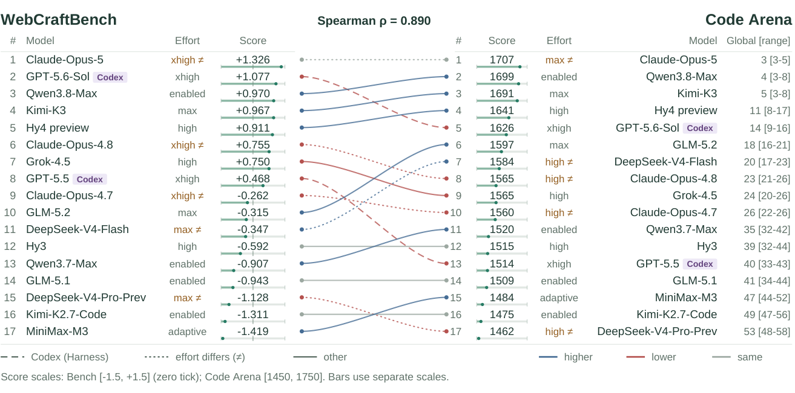
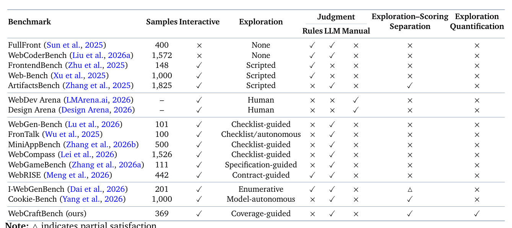
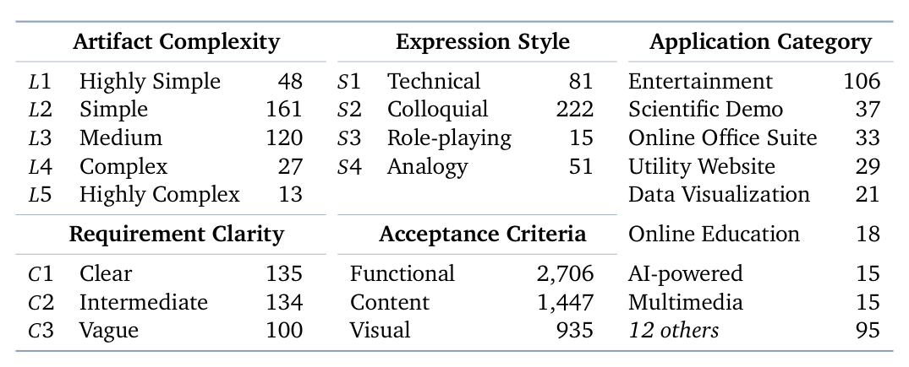
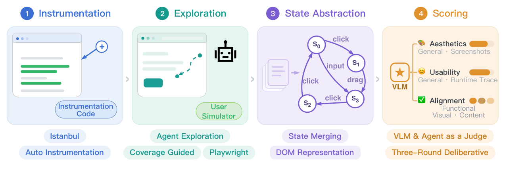
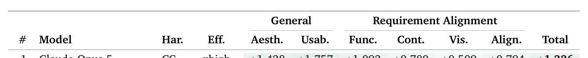
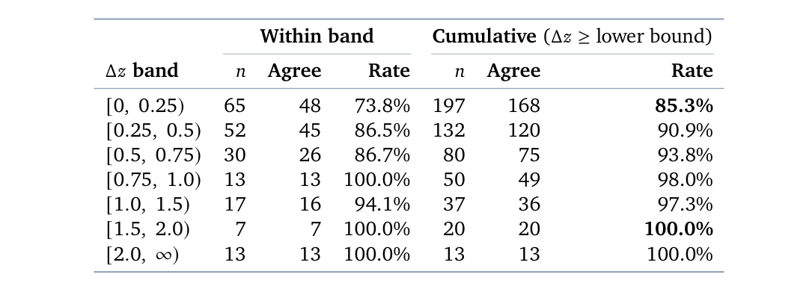
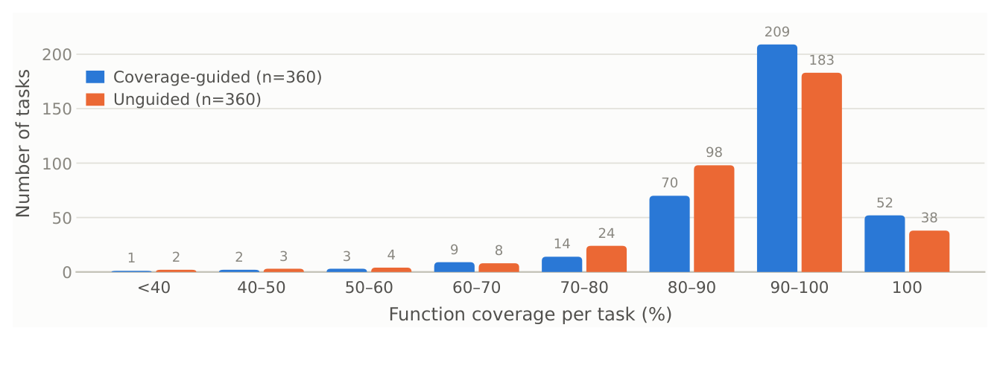
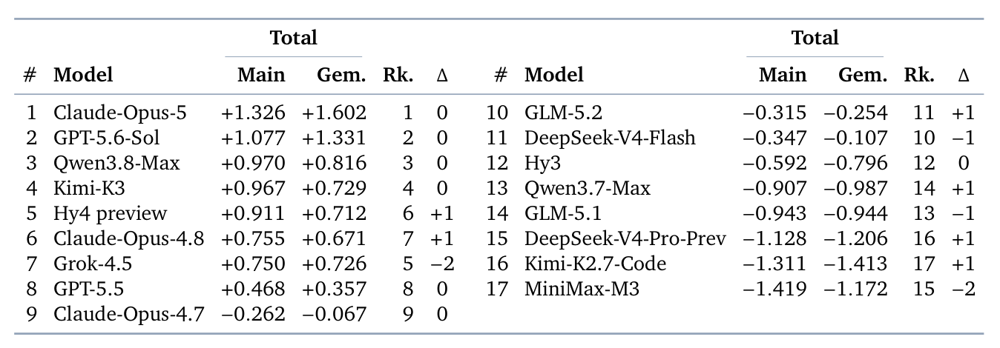
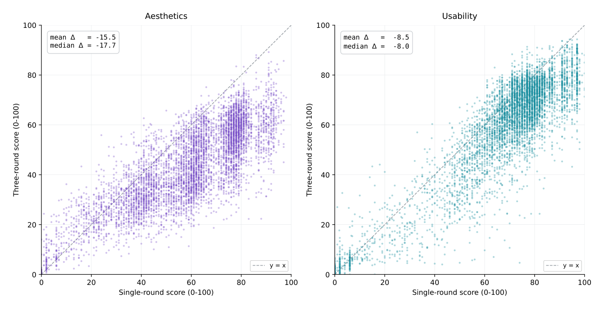
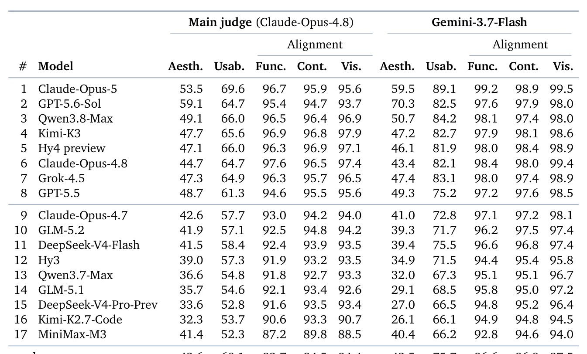

WebCraftBench: Evaluating Web Application Generation from a Software Testing Perspective
WebCraftBench：软件测试视角的 Web 应用生成评测
Agent 真机操作站点+覆盖引导探索找未触达路径；369 需求/5088 验收标准/17 模型 6273 应用，与人类偏好一致率 85.3%。
翻译范围：正文全部段落走三步精翻（直译→反思→雅化）；脚注与参考文献不译；公式、数字、模型名、数据集名、引用标记按原文 Unicode 保真；表格还原为可复制文本。

Figure 1 | WebCraftBench and Code Arena rankings for 17 shared models. # gives shared-set rank; Global [range] gives Code Arena’s overall rank and reported range. Blue/red/gray links indicate higher/lower/unchanged shared-set rank. Long dashes mark the two GPT models using Codex on both sides; other models use Claude Code in WebCraftBench and a custom harness in Code Arena. Dots mark differing effort labels. Scores use separate scales; harness/effort can differ.
Table 1
| Judgment | Exploration–Scoring | Exploration | ||||
|---|---|---|---|---|---|---|
| Benchmark Samples | Interactive | Exploration | Rules LLM | Manual | Separation | Quantification |
| FullFront (Sun et al., 2025) 400 | × | None | ✓ ✓ | × | × | × |
| WebCoderBench (Liu et al., 2026a) 1,572 | × | None | ✓ ✓ | × | × | × |
| FrontendBench (Zhu et al., 2025) 148 | ✓ | Scripted | ✓ × | × | × | × |
| Web-Bench (Xu et al., 2025) 1,000 | ✓ | Scripted | ✓ × | × | × | × |
| ArtifactsBench (Zhang et al., 2025) 1,825 | ✓ | Scripted | × ✓ | × | ✓ | × |
| WebDev Arena (LMArena.ai, 2026) – | ✓ | Human | × × | ✓ | × | × |
| Design Arena (Design Arena, 2026) – | ✓ | Human | × × | ✓ | × | × |
| WebGen-Bench (Lu et al., 2026) 101 | ✓ | Checklist-guided | × ✓ | × | × | × |
| FronTalk (Wu et al., 2025) 100 | ✓ | Checklist/autonomous | × ✓ | × | × | × |
| MiniAppBench (Zhang et al., 2026b) 500 | ✓ | Checklist-guided | × ✓ | × | × | × |
| WebCompass (Lei et al., 2026) 1,526 | ✓ | Checklist-guided | × ✓ | × | × | × |
| WebGameBench (Zhang et al., 2026a) 111 | ✓ | Specification-guided | × ✓ | × | × | × |
| WebRISE (Meng et al., 2026) 442 | ✓ | Contract-guided | ✓ ✓ | × | × | × |
| I-WebGenBench (Dai et al., 2026) 201 | ✓ | Enumerative | ✓ ✓ | × | △ | × |
| Cookie-Bench (Yang et al., 2026) 1,000 | ✓ | Model-autonomous | × ✓ | × | ✓ | × |
| WebCraftBench (ours) 369 | ✓ | Coverage-guided | × ✓ | × | ✓ | ✓ |
| Note: △indicates partial satisfaction |
Table 2
| Artifact Complexity | Expression Style | Application | Category |
|---|---|---|---|
| 𝐿1 Highly Simple 48 | 𝑆1 Technical 81 | Entertainment | 106 |
| 𝐿2 Simple 161 | 𝑆2 Colloquial 222 | Scientific Demo | 37 |
| 𝐿3 Medium 120 | 𝑆3 Role-playing 15 | Online Office | Suite 33 |
| 𝐿4 Complex 27 | 𝑆4 Analogy 51 | Utility Website | 29 |
| 𝐿5 Highly Complex 13 | Data Visualization | 21 | |
| Requirement Clarity | Acceptance Criteria | Online Education | 18 |
| 𝐶1 Clear 135 | Functional 2,706 | AI-powered | 15 |
| 𝐶2 Intermediate 134 | Content 1,447 | Multimedia | 15 |
| 𝐶3 Vague 100 | Visual 935 | 12 others | 95 |
Table 3表 3 报告 17 个 LLM 的维度级 𝑧 分数与聚合主分数。正分表示高于模型池均值（§4.4）；详细原始分数见附录 E。
| General | Requirement Alignment | |||||
|---|---|---|---|---|---|---|
| # | Model | Har. | Eff. | Aesth. Usab. | Func. Cont. Vis. Align. | Total |
| 1 | Claude Opus 5 | CC | xhigh | +1 428 +1 757 | +1 093 +0 780 +0 509 +0 794 | +1 326 |
Table 4表 4 显示，WebCraftBench 在 197 对中的 168 对上与人类偏好一致，总体一致率达 85.3%。
| Within | band | Cumulative | (Δ𝑧≥lower | bound) | ||
|---|---|---|---|---|---|---|
| Δ𝑧band | 𝑛 | Agree | Rate | 𝑛 | Agree | Rate |
| [0, 0.25) | 65 | 48 | 73.8% | 197 | 168 | 85.3% |
| [0.25, 0.5) | 52 | 45 | 86.5% | 132 | 120 | 90.9% |
| [0.5, 0.75) | 30 | 26 | 86.7% | 80 | 75 | 93.8% |
| [0.75, 1.0) | 13 | 13 | 100.0% | 50 | 49 | 98.0% |
| [1.0, 1.5) | 17 | 16 | 94.1% | 37 | 36 | 97.3% |
| [1.5, 2.0) | 7 | 7 | 100.0% | 20 | 20 | 100.0% |
| [2.0, ∞) | 13 | 13 | 100.0% | 13 | 13 | 100.0% |
Table 5表 5 显示，模型排名在两个评审模型之间保持稳定：模型总分的 Pearson 相关系数为 𝑟= 0.983，Spearman 等级相关系数为 𝜌= 0.980；136 个模型对中 130 对保持相对顺序，对应 95.6% 的成对一致率；前四名及第 8、9、12 名保持不变。
| Total | Total | ||||||||||
|---|---|---|---|---|---|---|---|---|---|---|---|
| # | Model | Main | Gem. | Rk. | Δ | # | Model | Main | Gem. | Rk. | Δ |
| 1 | Claude-Opus-5 | +1.326 | +1.602 | 1 | 0 | 10 | GLM-5.2 | −0.315 | −0.254 | 11 | +1 |
| 2 | GPT-5.6-Sol | +1.077 | +1.331 | 2 | 0 | 11 | DeepSeek-V4-Flash | −0.347 | −0.107 | 10 | −1 |
| 3 | Qwen3.8-Max | +0.970 | +0.816 | 3 | 0 | 12 | Hy3 | −0.592 | −0.796 | 12 | 0 |
| 4 | Kimi-K3 | +0.967 | +0.729 | 4 | 0 | 13 | Qwen3.7-Max | −0.907 | −0.987 | 14 | +1 |
| 5 | Hy4 preview | +0.911 | +0.712 | 6 | +1 | 14 | GLM-5.1 | −0.943 | −0.944 | 13 | −1 |
| 6 | Claude-Opus-4.8 | +0.755 | +0.671 | 7 | +1 | 15 | DeepSeek-V4-Pro-Prev | −1.128 | −1.206 | 16 | +1 |
| 7 | Grok-4.5 | +0.750 | +0.726 | 5 | −2 | 16 | Kimi-K2.7-Code | −1.311 | −1.413 | 17 | +1 |
| 8 | GPT-5.5 | +0.468 | +0.357 | 8 | 0 | 17 | MiniMax-M3 | −1.419 | −1.172 | 15 | −2 |
| 9 | Claude-Opus-4.7 | −0.262 | −0.067 | 9 | 0 |
Table 6表 6 报告 0–100 制的原始分数。视觉美观与可用性的五个最终评审分数（0–5 制）经截尾均值聚合并乘以 20。原始均值为便于呈现四舍五入到一位小数，可能掩盖标准化分数中保留的区分。行序与表 3 一致；列均值与极差在全部 17 个模型上计算，与排名对比口径一致。
| Main | judge | (Claude-Opus-4.8) | Gemini-3.7-Flash | |||||||
|---|---|---|---|---|---|---|---|---|---|---|
| Alignment | Alignment | |||||||||
| # Model | Aesth. | Usab. | Func. | Cont. | Vis. | Aesth. | Usab. | Func. | Cont. | Vis. |
| 1 Claude-Opus-5 | 53.5 | 69.6 | 96.7 | 95.9 | 95.6 | 59.5 | 89.1 | 99.2 | 98.9 | 99.5 |
| 2 GPT-5.6-Sol | 59.1 | 64.7 | 95.4 | 94.7 | 93.7 | 70.3 | 82.5 | 97.6 | 97.9 | 98.0 |
| 3 Qwen3.8-Max | 49.1 | 66.0 | 96.5 | 96.4 | 96.9 | 50.7 | 84.2 | 98.1 | 97.4 | 98.0 |
| 4 Kimi-K3 | 47.7 | 65.6 | 96.9 | 96.8 | 97.9 | 47.2 | 82.7 | 97.9 | 98.1 | 98.6 |
| 5 Hy4 preview | 47.1 | 66.0 | 96.3 | 96.9 | 97.1 | 46.1 | 81.9 | 98.0 | 98.4 | 98.9 |
| 6 Claude-Opus-4.8 | 44.7 | 64.7 | 97.6 | 96.5 | 97.4 | 43.4 | 82.1 | 98.4 | 98.0 | 99.4 |
| 7 Grok-4.5 | 47.3 | 64.9 | 96.3 | 95.7 | 96.5 | 47.4 | 83.1 | 98.0 | 97.4 | 98.9 |
| 8 GPT-5.5 | 48.7 | 61.3 | 94.6 | 95.5 | 95.6 | 49.3 | 75.2 | 97.2 | 97.6 | 98.5 |
| 9 Claude-Opus-4.7 | 42.6 | 57.7 | 93.0 | 94.2 | 94.0 | 41.0 | 72.8 | 97.1 | 97.2 | 98.1 |
| 10 GLM-5.2 | 41.9 | 57.1 | 92.5 | 94.8 | 94.2 | 39.3 | 71.7 | 96.2 | 97.5 | 97.4 |
| 11 DeepSeek-V4-Flash | 41.5 | 58.4 | 92.4 | 93.9 | 93.5 | 39.4 | 75.5 | 96.6 | 96.8 | 97.4 |
| 12 Hy3 | 39.0 | 57.3 | 91.9 | 93.2 | 93.5 | 34.9 | 71.5 | 94.4 | 95.4 | 95.8 |
| 13 Qwen3.7-Max | 36.6 | 54.8 | 91.8 | 92.7 | 93.3 | 32.0 | 67.3 | 95.1 | 95.1 | 96.7 |
| 14 GLM-5.1 | 35.7 | 54.6 | 92.1 | 93.4 | 92.6 | 29.1 | 68.5 | 95.8 | 95.0 | 97.2 |
| 15 DeepSeek-V4-Pro-Prev | 33.6 | 52.8 | 91.6 | 93.5 | 93.4 | 27.0 | 66.5 | 94.8 | 95.2 | 96.4 |
| 16 Kimi-K2.7-Code | 32.3 | 53.7 | 90.6 | 93.3 | 90.7 | 26.1 | 66.1 | 94.9 | 94.8 | 94.5 |
| 17 MiniMax-M3 | 41.4 | 52.3 | 87.2 | 89.8 | 88.5 | 40.4 | 66.2 | 92.8 | 94.6 | 94.0 |
| l | 43 6 | 60 1 | 93 7 | 94 5 | 94 4 | 42 5 | 75 7 | 96 6 | 96 8 | 97 5 |
2026-9-22
2026-9-22
WebCraftBench: Evaluating Web Application Generation from
WebCraftBench：软件测试视角的
a Software Testing Perspective
Web 应用生成评测
Chenxu Liu1,†, Zilu Zou1, Peizhong Gao2,1, Jiawen Tao3,1, Zhexin Zhang2,1, Guang Chen1,
Chenxu Liu1,†, Zilu Zou1, Peizhong Gao2,1, Jiawen Tao3,1, Zhexin Zhang2,1, Guang Chen1,
Haowei Lin1, Ying Zhou1, Tianyi Bai1, Dolly Deng1, Suncong Zheng1 and Maxm Pan1
Haowei Lin1, Ying Zhou1, Tianyi Bai1, Dolly Deng1, Suncong Zheng1 and Maxm Pan1
1Hunyuan Team, Tencent, 2Tsinghua University, 3Peking University {lewiscxliu, ziluzou, chillgao, jadentao, zhexinzhang, maxluxchen, cloudlin,
1腾讯混元团队（Tencent），2清华大学（Tsinghua University），3北京大学（Peking University）{lewiscxliu, ziluzou, chillgao, jadentao, zhexinzhang, maxluxchen, cloudlin,
lilithyzhou, tianabai, dollydeng, congzheng, maxmpan}@tencent.com
lilithyzhou, tianabai, dollydeng, congzheng, maxmpan}@tencent.com
Human evaluation provides a direct measure of the quality of LLM-generated web applications. However, fitting human judgments through automated evaluation remains challenging. Static benchmarks can credit functionality that exists in source code but is unreachable at runtime. Interactive benchmarks exercise the application, yet incomplete exploration can cause them to miss implemented functionality and confound application defects with agent execution failures. To address these limitations, we propose WebCraftBench, an interactive benchmark for evaluating web application generation from a software testing perspective. WebCraftBench instruments each generated application and uses code coverage to guide an agent in exploring its functionality through user-simulated interactions. It then abstracts the interaction trace into a state-transition graph and evaluates the application along three dimensions: visual aesthetics, usability, and requirement alignment. By separating exploration from scoring, WebCraftBench collects runtime evidence without constraining exploration to predefined acceptance criteria. WebCraftBench comprises 369 real-world user requirements and 5,088 acceptance criteria. Evaluation of 17 frontier LLMs reveals distinct strengths across the three dimensions, with no model leading on every dimension. On 197 validated sessions sampled from an internal arena, WebCraftBench achieves 85.3% agreement with human preferences, with agreement generally increasing as the score difference between paired applications grows. Further experiments show that coverage guidance improves exploration coverage and the model rankings remain stable when the judge model is replaced.
人工评估能够直接度量 LLM 生成 Web 应用的质量，但如何让自动评估逼近人类判断仍具挑战。静态基准可能为源码中存在、运行时却不可达的功能加分；交互式基准虽会实际运行应用，但探索不充分时既会遗漏已实现的功能，也会把应用自身缺陷与智能体执行失败混为一谈。针对这些局限，我们提出 WebCraftBench——一个从软件测试视角评估 Web 应用生成的交互式基准。该基准对每个生成的应用进行插桩，利用代码覆盖率引导智能体通过模拟用户交互探索应用功能，再将交互轨迹抽象为状态转移图，从视觉美观、可用性与需求对齐三个维度评估应用。通过将探索与评分解耦，WebCraftBench 能够收集运行时证据，而不把探索束缚在预定义的验收标准上。WebCraftBench 包含 369 条真实用户需求与 5,088 条验收标准。对 17 个前沿 LLM 的评测显示，各模型在三个维度上各有所长，无一模型全面领先。在从内部 arena 采样的 197 个有效会话中，WebCraftBench 与人类偏好的一致率达 85.3%，且随配对应用分差增大而总体上升。进一步实验表明，覆盖引导能提升探索覆盖率，且更换评审模型后模型排名保持稳定。
arXiv:2609.15387v3 [cs.SE] 20 Sep 2026
arXiv:2609.15387v3 [cs.SE] 20 Sep 2026
WebCraftBench Code Arena Spearman ρ = 0.890
WebCraftBench Code Arena Spearman ρ = 0.890
# Model Effort Score # Score Effort Model Global [range]
# Model Effort Score # Score Effort Model Global [range]
1 Claude-Opus-5 xhigh ≠ +1.326 1 1707 max ≠ Claude-Opus-5 3 [3-5]
1 Claude-Opus-5 xhigh ≠ +1.326 1 1707 max ≠ Claude-Opus-5 3 [3-5]
2 GPT-5.6-Sol Codex xhigh +1.077
2 GPT-5.6-Sol Codex xhigh +1.077
2 1699 enabled Qwen3.8-Max 4 [3-8]
2 1699 enabled Qwen3.8-Max 4 [3-8]
3 Qwen3.8-Max enabled +0.970
3 Qwen3.8-Max enabled +0.970
3 1691 max Kimi-K3 5 [3-8]
3 1691 max Kimi-K3 5 [3-8]
4 Kimi-K3 max +0.967
4 Kimi-K3 max +0.967
4 1641 high Hy4 preview 11 [8-17]
4 1641 high Hy4 preview 11 [8-17]
5 Hy4 preview high +0.911
5 Hy4 preview high +0.911
5 1626 xhigh GPT-5.6-Sol Codex 14 [9-16]
5 1626 xhigh GPT-5.6-Sol Codex 14 [9-16]
6 Claude-Opus-4.8 xhigh ≠ +0.755
6 Claude-Opus-4.8 xhigh ≠ +0.755
6 1597 max GLM-5.2 18 [16-21]
6 1597 max GLM-5.2 18 [16-21]
7 Grok-4.5 high +0.750
7 Grok-4.5 high +0.750
7 1584 high ≠ DeepSeek-V4-Flash 20 [17-23]
7 1584 high ≠ DeepSeek-V4-Flash 20 [17-23]
8 GPT-5.5 Codex xhigh +0.468
8 GPT-5.5 Codex xhigh +0.468
8 1565 high ≠ Claude-Opus-4.8 23 [21-26]
8 1565 high ≠ Claude-Opus-4.8 23 [21-26]
9 Claude-Opus-4.7 xhigh ≠ -0.262
9 Claude-Opus-4.7 xhigh ≠ -0.262
9 1565 high Grok-4.5 24 [20-26]
9 1565 high Grok-4.5 24 [20-26]
10 1560 high ≠ Claude-Opus-4.7 26 [22-26] 10 GLM-5.2 max -0.315
10 1560 high ≠ Claude-Opus-4.7 26 [22-26] 10 GLM-5.2 max -0.315
11 DeepSeek-V4-Flash max ≠ -0.347
11 DeepSeek-V4-Flash max ≠ -0.347
11 1520 enabled Qwen3.7-Max 35 [32-42]
11 1520 enabled Qwen3.7-Max 35 [32-42]
12 Hy3 high -0.592 12 1515 high Hy3 39 [32-44]
12 Hy3 high -0.592 12 1515 high Hy3 39 [32-44]
13 Qwen3.7-Max enabled -0.907
13 Qwen3.7-Max enabled -0.907
13 1514 xhigh GPT-5.5 Codex 40 [33-43]
13 1514 xhigh GPT-5.5 Codex 40 [33-43]
14 GLM-5.1 enabled -0.943 14 1509 enabled GLM-5.1 41 [34-44]
14 GLM-5.1 enabled -0.943 14 1509 enabled GLM-5.1 41 [34-44]
15 DeepSeek-V4-Pro-Prev max ≠ -1.128
15 DeepSeek-V4-Pro-Prev max ≠ -1.128
15 1484 adaptive MiniMax-M3 47 [44-52]
15 1484 adaptive MiniMax-M3 47 [44-52]
16 Kimi-K2.7-Code enabled -1.311 16 1475 enabled Kimi-K2.7-Code 49 [47-56]
16 Kimi-K2.7-Code enabled -1.311 16 1475 enabled Kimi-K2.7-Code 49 [47-56]
17 MiniMax-M3 adaptive -1.419
17 MiniMax-M3 adaptive -1.419
17 1462 high ≠ DeepSeek-V4-Pro-Prev 53 [48-58]
17 1462 high ≠ DeepSeek-V4-Pro-Prev 53 [48-58]
Codex (Harness) effort differs (≠) other higher lower same
Codex（harness）推理力度不同（≠）：更高、更低、相同
Score scales: Bench [-1.5, +1.5] (zero tick); Code Arena [1450, 1750]. Bars use separate scales.
分数范围：Bench [-1.5, +1.5]（含零刻度）；Code Arena [1450, 1750]。柱形分别使用独立坐标尺度。
Corresponding author: Chenxu Liu† (lewiscxliu@tencent.com)
通讯作者：Chenxu Liu†（lewiscxliu@tencent.com）
WebCraftBench: Evaluating Web Application Generation from a Software Testing Perspective
WebCraftBench：软件测试视角的 Web 应用生成评测
1. Introduction1. 引言
Web applications run across platforms without installation, making them an accessible medium for
Web 应用无需安装即可跨平台运行，为 LLM 智能体
LLM agents to deliver interactive functionality to users. Given a natural-language requirement, an agent iteratively invokes tools and generates the source code of a runnable application. However, the evaluation of generated applications is typically highly subjective. Human-preference leaderboards such as Code Arena (LMArena.ai, 2026) obtain user preferences directly by asking annotators to choose between two applications generated by different models for the same requirement. However, repeated human evaluation is costly, requiring an automated benchmark to reduce the cost of evaluation while preserving user preferences.
向用户交付交互功能提供了便捷载体。给定一条自然语言需求，智能体会迭代调用工具，生成可运行应用的源代码。然而，对生成应用的评估往往高度主观。Code Arena（LMArena.ai, 2026）等人类偏好排行榜让标注者在不同模型针对同一需求生成的两个应用之间二选一，直接获取用户偏好；但反复的人工评估成本高昂，亟需既能降低评估成本、又能保留用户偏好的自动基准。
Existing automated benchmarks face two major limitations, making them less likely to align with user preferences. First, static benchmarks do not exercise the generated application. Static benchmarks based on source code or a single rendered screenshot (Sun et al., 2025; Liu et al., 2026a) assess the applications without verifying whether users can reach and use the intended functionalities. For example, a broken button on the entry page can block all downstream functionalities, while the corresponding code may still be present, causing the benchmark to credit functionalities that are unusable in practice. Second, interactive benchmarks struggle to distinguish application defects from agent execution failures. Interactive benchmarks define rubrics, reference answers, or contracts and ask an agent to validate them through interactions (Lu et al., 2026; Wu et al., 2025; Zhang et al., 2026b;a; Meng et al., 2026; Lei et al., 2026). However, a failed check may indicate that the application lacks the target functionality or that the agent failed to locate or trigger it. Errors in GUI interaction and evidence interpretation make these causes difficult to distinguish, introducing uncertainty into the final score.
现有自动基准存在两大局限，难以与用户偏好对齐。其一，静态基准不实际运行生成的应用。基于源代码或单张渲染截图的静态基准（Sun et al., 2025; Liu et al., 2026a）在评估时并不验证用户能否触达并使用预期功能。例如，入口页面上一个失效按钮可能阻断全部下游功能，而相应代码依然存在，致使基准为实际不可用的功能加分。其二，交互式基准难以区分应用缺陷与智能体执行失败。此类基准定义评分规则、参考答案或契约，交由智能体通过交互加以验证（Lu et al., 2026; Wu et al., 2025; Zhang et al., 2026b;a; Meng et al., 2026; Lei et al., 2026）。然而，检查失败既可能源于应用缺失目标功能，也可能源于智能体未能定位或触发该功能。GUI 交互与证据解读中的误差使两种原因难以区分，为最终评分引入不确定性。
To address these limitations, in this paper, we propose WebCraftBench, an interactive benchmark for evaluating web application generation from a software testing perspective. WebCraftBench treats each generated application as software under test: it simulates user interactions and explores the application to collect runtime evidence. Code coverage serves two purposes in this process. It guides the exploration toward unexecuted code and quantifies how much of the implementation has been exercised. WebCraftBench separates exploration from scoring so that the exploration process is not constrained by acceptance criteria.
针对上述局限，我们提出 WebCraftBench——一个从软件测试视角评估 Web 应用生成的交互式基准。该基准将每个生成应用视为被测软件：模拟用户交互、探索应用并收集运行时证据。代码覆盖率在其中有双重作用：既引导探索覆盖未执行的代码，又量化实现已被测试的比例。探索与评分相互解耦，探索过程因此不受验收标准的约束。
WebCraftBench consists of four stages. (i) Instrumentation. An automated tool instruments the JavaScript code in each generated application to collect runtime code coverage without manual adaptation. (ii) Coverage-guided exploration. An LLM-driven agent explores the application as a software tester. When coverage plateaus, a separate LLM analyzes the uncovered code and provides natural-language guidance for subsequent exploration. This feedback supplements the agent’s own assessment of what remains to be tested. (iii) State abstraction. A deterministic state abstraction approach processes each page and merges pages with equivalent normalized representations into the same state, generating a compact state-transition graph to represent the exploration trace. (iv) Scoring. LLM and agentic judges assess visual aesthetics, usability, and requirement alignment using the state-transition graph and the recorded traces, DOM snapshots, and screenshots.
WebCraftBench 由四个阶段构成。(i) 插桩：自动化工具对每个生成应用中的 JavaScript 代码插桩，无需人工适配即可收集运行时代码覆盖。(ii) 覆盖引导探索：由 LLM 驱动的智能体以软件测试员的身份探索应用；当覆盖进入平台期时，另一个 LLM 分析未覆盖代码并给出自然语言指引，供后续探索参考，以补充智能体自身对剩余待测内容的判断。(iii) 状态抽象：确定性的状态抽象方法处理每个页面，把规范化表示等价的页面合并到同一状态，生成紧凑的状态转移图以表示探索轨迹。(iv) 评分：LLM 与智能体评审基于状态转移图以及记录的轨迹、DOM 快照和截图，评估视觉美观、可用性与需求对齐。
We evaluate 17 frontier LLMs on WebCraftBench and validate the benchmark against human prefer-
我们在 WebCraftBench 上评估 17 个前沿 LLM，并以人类偏好
ences from pairwise comparison samples. WebCraftBench achieves 85.3% pairwise agreement on 197 validated samples. The model-level results reveal complementary strengths in visual aesthetics, usability, and requirement alignment. Additional experiments show that coverage guidance improves exploration coverage and that model rankings remain stable across judge models. As shown in Figure 1, WebCraftBench rankings are highly correlated with Code Arena rankings1, with a Spearman
（来自成对比较样本）进行验证。WebCraftBench 在 197 个有效样本上取得 85.3% 的成对一致率。模型层面的结果显示，各模型在视觉美观、可用性与需求对齐上互有所长。补充实验表明，覆盖引导能提升探索覆盖率，且模型排名在不同评审模型之间保持稳定。如图 1 所示，WebCraftBench 排名与 Code Arena 排名1 高度相关，Spearman
1Code Arena Frontend, September 10, 2026: https://arena.ai/leaderboard/code/webdev/frontend.
1Code Arena Frontend，2026 年 9 月 10 日：https://arena.ai/leaderboard/code/webdev/frontend。
2
2
rank correlation (Spearman, 1987) of 𝜌= 0.890 across the 17 shared models. The two evaluations show broadly consistent capability tiers at shared-set ranks 1–5, 6–10, 11–14, and 15–17. Despite differences in reasoning effort and harness configurations, this alignment suggests that WebCraftBench captures capability distinctions consistent with the community preferences reflected in Code Arena.
等级相关系数（Spearman, 1987）在 17 个共有模型上达 𝜌= 0.890。两项评估在共有集合的第 1–5、6–10、11–14 与 15–17 名上呈现出大体一致的能力分层。尽管推理力度与 harness 配置有所不同，这种对齐表明 WebCraftBench 所捕捉的能力区分与 Code Arena 反映的社区偏好一致。
In summary, this paper makes the following main contributions:
综上，本文的主要贡献如下：
• We construct WebCraftBench, a benchmark with 369 real-world user requirements and 5,088 acceptance criteria for evaluating web application generation.
• 我们构建了 WebCraftBench——一个包含 369 条真实用户需求与 5,088 条验收标准的 Web 应用生成评估基准。
• We design a four-stage evaluation pipeline that separates exploration from scoring, guides explo- ration with code coverage, and organizes runtime evidence through state abstraction.
• 我们设计了四阶段评估流水线：探索与评分分离，以代码覆盖率引导探索，并通过状态抽象组织运行时证据。
• We evaluate 17 frontier LLMs across visual aesthetics, usability, and requirement alignment. Validation shows 85.3% agreement with human preferences, stable rankings across judge models, reliable instrumentation, and improved exploration coverage.
• 我们从视觉美观、可用性与需求对齐三个维度评估 17 个前沿 LLM。验证结果显示：与人类偏好一致率达 85.3%，排名在不同评审模型间保持稳定，插桩可靠，探索覆盖率得到提升。
2. Related Work2. 相关工作
2.1. Benchmarks for Web Application Generation2.1 Web 应用生成基准
Existing related benchmarks are shown in Table 1. Early static benchmarks formulate web gener- ation as reproducing a reference design and measure pixel-, text-, or element-level similarity to a reference screenshot or implementation (Beltramelli, 2018; Bhathal & Gupta, 2025; Vu et al., 2025; Sun et al., 2025). Real-world requirements, however, often admit multiple valid implementations. WebCoderBench (Liu et al., 2026a) assesses source code and initial renderings without a unique
现有相关基准见表 1。早期静态基准将 Web 生成形式化为复现参考设计，并度量与参考截图或实现在像素、文本或元素级别的相似度（Beltramelli, 2018; Bhathal & Gupta, 2025; Vu et al., 2025; Sun et al., 2025）。然而，真实需求往往容许多种有效实现。WebCoderBench（Liu et al., 2026a）在无唯一
reference implementation. These benchmarks support inexpensive, reproducible evaluation, but do not exercise the application and may credit functionality that is unreachable at runtime.
参考实现的情况下评估源代码与初始渲染。这类基准评估成本低、可复现，但不实际运行应用，可能为运行时无法触达的功能加分。
Interactive benchmarks execute applications in a browser, and score them using test suites, fixed action sequences, or staged screenshots (Xu et al., 2025; Zhu et al., 2025; Zhang et al., 2025), or ask agents to validate checklists, reference answers, contracts, or specifications (Lu et al., 2026; Zhang et al., 2026b; Meng et al., 2026; Zhang et al., 2026a; Wu et al., 2025). These benchmarks observe a broader range of runtime behavior and provide evidence for failure diagnosis. Predefined targets, nevertheless, constrain the verification scope, leaving behavior outside those targets unassessed. Failed agent-based checks can also reflect either application defects or agent failures.
交互式基准在浏览器中执行应用，用测试套件、固定动作序列或分阶段截图评分（Xu et al., 2025; Zhu et al., 2025; Zhang et al., 2025），或要求智能体验证核对清单、参考答案、契约或规格说明（Lu et al., 2026; Zhang et al., 2026b; Meng et al., 2026; Zhang et al., 2026a; Wu et al., 2025）。这类基准能观察到更广的运行时行为，为失败诊断提供证据；但预定义目标限定了验证范围，目标之外的行为无从评估，且基于智能体的检查失败既可能反映应用缺陷，也可能反映智能体自身的失败。
More recently, Cookie-Bench (Yang et al., 2026) removes checklists, allows the agent to plan interac- tions from the user request, and scores applications after evidence collection. I-WebGenBench (Dai et al., 2026) applies standardized actions to enumerated components and records DOM changes. However, neither explicitly measures exploration adequacy. WebCraftBench introduces code coverage measurement into the exploration process to quantify the functionalities exercised and guide further exploration, while withholding acceptance criteria from the exploration agent.
更近期的 Cookie-Bench（Yang et al., 2026）取消核对清单，允许智能体根据用户请求规划交互，并在收集证据后为应用评分；I-WebGenBench（Dai et al., 2026）对枚举的组件施加标准化操作并记录 DOM 变化。然而，二者均未显式度量探索的充分性。WebCraftBench 将代码覆盖度量引入探索过程，以量化已测试的功能并引导后续探索，同时不向探索智能体透露验收标准。
2.2. Automated GUI Testing2.2 自动化 GUI 测试
Automated GUI testing exercises applications through GUI actions to gain coverage and reveal failures within a specific time budget (Liu et al., 2026c). Existing work studies state abstraction approaches at different granularities (Yandrapally & Mesbah, 2022; Liu et al., 2025b; 2026b) to avoid repeated exploration, while using random-based (Google, 2025), model-based (Mesbah et al.,
自动化 GUI 测试在给定时间预算内通过 GUI 操作驱动应用，以获取覆盖并暴露缺陷（Liu et al., 2026c）。已有工作研究不同粒度的状态抽象方法（Yandrapally & Mesbah, 2022; Liu et al., 2025b; 2026b）以避免重复探索，并采用基于随机（Google, 2025）、基于模型（Mesbah et al.,

Table 1 | Comparison of WebCraftBench with existing benchmarks for web application generation.
2012), reinforcement-learning-based (Zheng et al., 2021), and LLM-based (Liu et al., 2024; 2025a) exploration strategies.
2012）、基于强化学习（Zheng et al., 2021）与基于 LLM（Liu et al., 2024; 2025a）的探索策略。
WebCraftBench adapts these approaches to evaluating LLM-generated web applications. Code coverage
WebCraftBench 将这些方法改造后用于评估 LLM 生成的 Web 应用。代码覆盖率
provides exploration feedback and quantifies the implementation exercised, leveraging the ideology of LLM-based GUI testing approaches. State abstraction groups near-duplicate pages (Yandrapally et al., 2020) into a compact state-transition graph, as part of the evidence for scoring.
提供探索反馈并量化已被测试的实现比例，借鉴了基于 LLM 的 GUI 测试方法的思路。状态抽象将近似重复的页面（Yandrapally et al., 2020）归并为紧凑的状态转移图，作为评分证据的一部分。
3. Dataset3. 数据集
WebCraftBench contains 369 real-world user requirements, each paired with a checklist used exclu-
WebCraftBench 包含 369 条真实用户需求，每条需求都配有一份仅用于
sively for scoring.
评分的核对清单。
3.1. Data Source
3.1. 数据来源
We collect our user requirements from production traffic on an enterprise-internal replica of Code Arena (LMArena.ai, 2026). These requirements retain characteristics of real-world usage that are difficult to reproduce synthetically, including colloquial expressions, incomplete specifications, and substantial variation in the expected scope of the application. Following WebCoderBench (Liu et al., 2026a), we first anonymize the requirements. Three annotators then review each requirement and use majority voting to exclude samples that are incomprehensible, depend on unavailable materials, or fall outside the web application scope. We remove lexical duplicates using MinHash (Broder, 1997) and semantic duplicates using MiniLM (Wang et al., 2020). The resulting dataset contains 369 text-only requirements. Our requirements have a mean length of 601 characters, a median of 105, and a range of 7–37,903. This distribution captures the coexistence of brief requests and detailed specifications in production traffic.
我们从 Code Arena（LMArena.ai, 2026）企业内部复刻平台的生产流量中收集用户需求。这些需求保留了难以人工合成的真实使用特征：口语化表达、不完整的规格说明，以及应用预期范围的巨大差异。遵循 WebCoderBench（Liu et al., 2026a），我们先对需求匿名化，再由三名标注者逐一审阅，以多数投票剔除无法理解、依赖不可获得材料或超出 Web 应用范围的样本。词面重复用 MinHash（Broder, 1997）去除，语义重复用 MiniLM（Wang et al., 2020）去除。最终数据集含 369 条纯文本需求，长度均值为 601 字符、中位数 105、范围 7–37,903，刻画了生产流量中简短请求与详细规格并存的分布形态。
3.2. Requirement Characterization
3.2. 需求刻画
Following the annotation protocol of WebCoderBench (Liu et al., 2026a), we characterize each requirement along four dimensions: artifact complexity, expression style, requirement clarity, and
遵循 WebCoderBench（Liu et al., 2026a）的标注协议，我们从工件复杂度、表达风格、需求清晰度与

Table 2 | Dataset statistics for WebCraftBench.
application category. An LLM assigns initial labels and provides a rationale for each, after which human annotators review and revise the annotations. Table 2 summarizes the results. Overall, 63.4% of requirements are not fully specified (𝐶2 or 𝐶3), and 60.2% use colloquial language (𝑆2). These characteristics require LLMs to interpret user intent from incomplete or informal descriptions. Entertainment and scientific demonstrations are the two largest application categories.
应用类别四个维度刻画每条需求：LLM 先为每个维度给出初始标签及理由，再由人工标注者复核修订。表 2 汇总了结果。总体而言，63.4% 的需求未被完整说明（𝐶2 或 𝐶3），60.2% 使用口语化表达（𝑆2）。这些特征要求 LLM 从不完整或非正式的描述中解读用户意图。娱乐与科学演示是规模最大的两类应用。
3.3. Acceptance Criteria3.3 验收标准
Real-world user requirements often admit multiple valid implementations. We therefore associate each task with a checklist, including three sets of acceptance criteria, with each acceptance criterion expressing a concise, high-level property that should be observable in the delivered application. The three sets of criteria correspond to three dimensions: functional, including features and interactions; content, including text, data, and specified resources; and visual, including layout, style, and required components. These dimensions jointly determine the requirement-alignment score (detailed in §4.4). Following WebCoderBench (Liu et al., 2026a), we use Claude-Opus-4.8, GPT-5.6-Sol, and Grok-4.5 to generate checklists independently. Claude-Opus-4.8 merges the checklists following the majority voting process, and human experts validate the resulting set. The checklists describe the required observable properties without prescribing implementation details or introducing requirements absent from the original request. The 369 requirements yield 5,088 acceptance criteria: 2,706 functional, 1,447 content, and 935 visual. Each task has 13.8 criteria on average, ranging from 2 to 77 according to the detail of the requirement.
真实用户需求往往容许多种有效实现。为此，我们为每个任务关联一份核对清单，内含三组验收标准；每条标准表达一条应在交付应用中可观察到的高度凝练的性质。三组标准对应三个维度：功能（功能与交互）、内容（文本、数据与指定资源）与视觉（布局、样式与所需组件），三者共同决定需求对齐分数（详见 §4.4）。遵循 WebCoderBench（Liu et al., 2026a），我们用 Claude-Opus-4.8、GPT-5.6-Sol 与 Grok-4.5 独立生成核对清单，由 Claude-Opus-4.8 按多数投票流程合并，再由人类专家校验最终集合。核对清单只描述所需的可观察性质，不规定实现细节，也不引入原始请求中不存在的需求。369 条需求共产出 5,088 条验收标准：功能 2,706 条、内容 1,447 条、视觉 935 条；每任务平均 13.8 条，依需求详略从 2 条到 77 条不等。
4. Evaluation Process4. 评估流程
The evaluation workflow of WebCraftBench contains four stages, which are instrumentation, explo- ration, state abstraction, and scoring (shown in Figure 2). The first three stages collect and organize runtime evidence without access to acceptance criteria, while the scoring stage leverages these criteria for a fair judgment.
WebCraftBench 的评估流程包含插桩、探索、状态抽象与评分四个阶段（见图 2）。前三个阶段在不接触验收标准的前提下收集并组织运行时证据；评分阶段则利用这些标准做出公正判定。
4.1. Instrumentation4.1 插桩
In order to obtain coverage from various kinds of generated applications, we develop an automated instrumentation tool based on Istanbul (Istanbul Contributors, 2024), a mature and famous instru- mentation tool for JavaScript. Our tool supports plain static HTML, Vite, Next, Create React App (CRA), and Astro, with framework-specific procedures applied automatically. With an application as
为了从各类生成的应用中获得覆盖率，我们基于成熟知名的 JavaScript 插桩工具 Istanbul（Istanbul Contributors, 2024）开发了自动插桩工具。该工具支持纯静态 HTML、Vite、Next、Create React App（CRA）与 Astro，并自动应用各框架特定的处理流程。给定一个应用作

Figure 2 | The evaluation workflow of WebCraftBench.
input, our tool first detects its framework according to configuration files. For static frameworks, it runs Istanbul locally to instrument the application; for frameworks that require a build, it injects a plugin during the build and performs instrumentation after the build. After instrumentation, each JavaScript statement is associated with a counter that records every execution of the statement at runtime. During exploration, after each interaction, cumulative coverage and per-step gains can be calculated from the number of covered statement counters and the total number of counters. If instrumentation fails, the application remains in the evaluation and undergoes exploration and scoring in black-box mode. Appendix A.1 describes framework support and deployment procedures; §5.5 evaluates instrumentation reliability. The instrumented application is then deployed in a sandbox on a remote server and is accessible through a URL.
输入，工具首先根据配置文件检测其框架：对静态框架，在本地运行 Istanbul 完成插桩；对需要构建的框架，则在构建期间注入插件、构建后执行插桩。插桩完成后，每条 JavaScript 语句都关联一个计数器，记录该语句在运行时的每一次执行。探索期间，每次交互后即可由已覆盖计数器数量与计数器总数算出累计覆盖率与单步增益。若插桩失败，应用仍保留在评估中，改以黑盒模式探索与评分。附录 A.1 描述框架支持与部署流程；§5.5 评估插桩可靠性。插桩后的应用部署在远程服务器的沙箱中，可通过 URL 访问。
4.2. Coverage-Guided Exploration4.2 覆盖引导探索
In order to flexibly control the agent’s context during exploration, we develop an agent based on the AWorld (Yu et al., 2025) framework, interacting with the web applications using Playwright MCP (Microsoft, 2025). The agent reads a simplified DOM tree of the current page at each step to understand its content and retrieves only the tree diff between steps to save context space. The agent is prompted as a software tester to discover available functionalities and test boundary conditions. The agent has no access to source code, acceptance criteria, or reference answers.
为了在探索期间灵活控制智能体的上下文，我们基于 AWorld（Yu et al., 2025）框架构建了探索智能体，通过 Playwright MCP（Microsoft, 2025）与 Web 应用交互。智能体每步读取当前页面的简化 DOM 树以理解页面内容，且仅在步骤间获取树的差异以节省上下文空间。其提示词将其设定为软件测试员，负责发现可用功能并测试边界条件；源代码、验收标准与参考答案对其完全不可见。
During exploration, the harness monitors the coverage and detects a coverage plateau after three consecutive interactions without a coverage increase. It then extracts the uncovered code and invokes a separate LLM to produce natural-language suggestions. These suggestions are injected into the exploration agent’s context to guide further testing. Exploration ends when the agent declares testing complete or exhausts a 100-step budget. To conclude, in its final step, the agent summarizes the functionality, interactions, and observed failures. Coverage thus both quantifies code execution and directs subsequent exploration; §5.6 evaluates its contribution.
探索期间，harness 监控覆盖率，并在连续三次交互无覆盖提升时判定进入覆盖平台期：此时提取未覆盖代码，调用另一个 LLM 生成自然语言建议，注入探索智能体的上下文以指引后续测试。当智能体宣布测试完成或耗尽 100 步预算时，探索结束；在收尾一步中，智能体总结功能、交互与观察到的缺陷。由此，覆盖率既量化代码执行，又引导后续探索；§5.6 评估其贡献。
4.3. State Abstraction4.3 状态抽象
Exploration traces, screenshots, and DOM snapshots can easily exceed the judge’s context window and obscure relevant evidence through repetition. We adopt the state abstraction practice from the area of automated GUI testing (Mesbah et al., 2012; Yandrapally & Mesbah, 2022) to organize observations into a compact state-transition graph. Each snapshot is normalized by removing script and style tags and mutable component attributes, and replacing timestamps and clock strings with fixed placeholders. Pages with identical normalized representations form one state, and user actions define
探索轨迹、截图与 DOM 快照极易超出评审模型的上下文窗口，且其中的重复内容会淹没相关证据。我们借鉴自动化 GUI 测试领域（Mesbah et al., 2012; Yandrapally & Mesbah, 2022）的状态抽象实践，将观察组织为紧凑的状态转移图：每个快照经规范化处理——移除脚本与样式标签及可变的组件属性，并把时间戳与时钟字符串替换为固定占位符。规范化表示相同的页面归入同一状态，用户操作定义
transitions. Although simple and heuristic, this approach is demonstrated to be effective (Liu et al., 2025b). The constructed state-transition graph provides a straightforward and concise understanding of the application, serving as part of the evidence for scoring.
转移。该方法虽然简单且属启发式，但已被证明行之有效（Liu et al., 2025b）。由此构建的状态转移图提供了对应用直观而简明的把握，作为评分证据的一部分。
4.4. Scoring4.4 评分
WebCraftBench scores visual aesthetics, usability, and requirement alignment separately on a 0–100
WebCraftBench 在 0–100 分
scale. Appendix A.2 provides procedural details.
分制上对视觉美观、可用性与需求对齐分别评分。附录 A.2 给出流程细节。
Visual aesthetics. This dimension assesses up to five representative screenshots collected during exploration. We filter blank and partially loaded frames using foreground and edge density, then apply farthest-point sampling to select visually diverse screenshots. The judges examine layout, information organization, typography, graphic quality, and polish.
视觉美观。该维度评估探索期间收集的至多五张代表性截图：先以前景密度与边缘密度过滤空白及加载不完整的帧，再用最远点采样选出视觉上多样的截图。评审模型考察布局、信息组织、排版、图形质量与打磨程度。
Usability. This dimension assesses the experience of interacting with the application using the complete exploration trace and constructed state-transition graph. The judges examine successfully executed interactions and observed failures, including problems with feedback, navigation, state recovery, and fault tolerance.
可用性。该维度基于完整探索轨迹与构建的状态转移图，评估与应用交互的体验。评审模型考察成功执行的交互与观察到的缺陷，涵盖反馈、导航、状态恢复与容错等方面的问题。
Both dimensions use a three-round deliberative protocol: an advocate identifies strengths, a critic identifies defects, and a final judge verifies both assessments against the supplied evidence before scoring. The advocate and critic cite concrete observations without assigning scores. The judge adds seven dimension-specific adjustments to a 0–5 base score and clips the result to [0, 5]. Appendix A.2 specifies these aspects. To reduce sampling variance, the final judge runs independently five times with the first two assessments held fixed. Given scores 𝑞1, . . . , 𝑞5 ∈[0, 5], we discard the highest and lowest scores and map the remaining mean to 0–100:
两个维度均采用三轮审议协议：倡导者指出优点，批评者指出缺陷，最终评审在评分前对照所给证据核实双方观点。倡导者与批评者只引用具体观察，不给出分数；最终评审在 0–5 的基础分上添加七项维度特定调整，并将结果截断到 [0, 5]。附录 A.2 规定了这些方面。为降低抽样方差，最终评审在前两轮评估固定的前提下独立运行五次。给定分数 𝑞1, . . . , 𝑞5 ∈[0, 5]，我们去掉最高分与最低分，将剩余均值映射到 0–100：
Í5
Í5
𝑖=1 𝑞𝑖−max𝑖𝑞𝑖−min𝑖𝑞𝑖
𝑖=1 𝑞𝑖−max𝑖𝑞𝑖−min𝑖𝑞𝑖
𝑠= 20 ×
𝑠= 20 ×
3 .
3 .
This protocol aims to improve score discrimination and reduce concentration at the scale endpoints; Appendix D compares it with single-round scoring.
该协议旨在提高分数区分度、减少分数向量表端点的集中；附录 D 将其与单轮评分进行对比。
Requirement alignment. This dimension judges the application behavior against the acceptance criterion. Since the complete set of evidence can overwhelm an LLM, we build a judging agent for this dimension. This agent starts with the state-transition graph to form an overall understanding of the application. It then carefully examines and searches through recorded evidence using a tool set, which supports regular-expression searches over the DOMs and traces with line-numbered results, paginated reading of DOMs and traces, screenshot inspection, and state-transition graph inspection. This retrieval process allows the agent to examine relevant evidence without loading the entire record into one context window. Once this agent determines that it has collected enough evidence for scoring, it gives a binary judgment on whether each acceptance criterion is implemented. Every judgment must cite runtime evidence, such as a trace step or a state’s DOM snapshot and screenshot. Each alignment sub-dimension is scored as 100 times the fraction of its criteria judged to be implemented.
需求对齐。该维度依据验收标准评判应用行为。由于完整证据集合可能超出单个 LLM 的处理能力，我们为此构建了评审智能体：它先从状态转移图入手形成对应用的整体认识，再借助工具集细致检索记录在案的证据——工具集支持对 DOM 与轨迹的正则检索（结果带行号）、DOM 与轨迹的分页阅读、截图检查以及状态转移图检查。这种检索机制使智能体无需把全部记录塞进单个上下文窗口即可检视相关证据。待其确认证据充分后，即对每条验收标准是否实现给出二元判定；每个判定都必须引用运行时证据，如某条轨迹步骤或某个状态的 DOM 快照与截图。每个对齐子维度的得分等于被判实现的准则比例乘以 100。
Overall score. Because scores differ in discriminative power across dimensions, we compute z-scores for each dimension to aggregate them while preventing any one dimension from dominating the overall score. Specifically, for model 𝑚and dimension 𝑗, let ¯𝑥𝑚,𝑗be the mean raw score over generated applications. We compute
总分。各维度的区分能力不同，因此我们对每个维度先计算 z 分数再聚合，以防任一维度主导总分。具体而言，对模型 𝑚 与维度 𝑗，令 ¯𝑥𝑚,𝑗 为其在所生成应用上的原始分数均值。我们计算
𝑧𝑚,𝑗= ¯𝑥𝑚,𝑗−𝜇𝑗
𝑧𝑚,𝑗= ¯𝑥𝑚,𝑗−𝜇𝑗
,
,
𝜎𝑗
𝜎𝑗
where 𝜇𝑗and 𝜎𝑗are the mean and population standard deviation of these model-level means across the 𝑁evaluated LLMs. The mean of the functional, content, and visual alignment 𝑧-scores gives
其中 𝜇𝑗 与 𝜎𝑗 是这些模型级均值在 𝑁 个被评估 LLM 上的均值与总体标准差。将功能、内容与视觉对齐的 z 分数取均值即得

Table 3 | Results of 17 frontier LLMs on WebCraftBench.表 3 报告 17 个 LLM 的维度级 𝑧 分数与聚合主分数。正分表示高于模型池均值（§4.4）；详细原始分数见附录 E。
1 Claude-Opus-5 CC xhigh +1.428 +1.757 +1.093 +0.780 +0.509 +0.794 +1.326 2 GPT-5.6-Sol CX xhigh +2.239 +0.854 +0.612 +0.092 −0.294 +0.137 +1.077 3 Qwen3.8-Max CC enabled +0.792 +1.088 +1.008 +1.049 +1.035 +1.031 +0.970 4 Kimi-K3 CC max +0.591 +1.027 +1.139 +1.252 +1.460 +1.283 +0.967 5 Hy4 preview CC high +0.505 +1.099 +0.937 +1.313 +1.134 +1.128 +0.911 6 Claude-Opus-4.8 CC xhigh +0.158 +0.848 +1.405 +1.107 +1.265 +1.259 +0.755 7 Grok-4.5 CC high +0.527 +0.902 +0.923 +0.648 +0.890 +0.820 +0.750 8 GPT-5.5 CX xhigh +0.729 +0.225 +0.318 +0.518 +0.513 +0.450 +0.468 9 Claude-Opus-4.7 CC xhigh −0.157 −0.442 −0.251 −0.163 −0.149 −0.188 −0.262 10 GLM-5.2 CC max −0.258 −0.552 −0.443 +0.122 −0.081 −0.134 −0.315 11 DeepSeek-V4-Flash CC max −0.312 −0.322 −0.479 −0.374 −0.369 −0.407 −0.347 12 Hy3 CC high −0.665 −0.519 −0.673 −0.725 −0.379 −0.592 −0.592 13 Qwen3.7-Max CC enabled −1.014 −0.976 −0.705 −1.052 −0.435 −0.731 −0.907 14 GLM-5.1 CC enabled −1.145 −1.022 −0.597 −0.655 −0.733 −0.662 −0.943 15 DeepSeek-V4-Pro-Prev CC max −1.453 −1.348 −0.786 −0.576 −0.391 −0.584 −1.128 16 Kimi-K2.7-Code CC enabled −1.642 −1.176 −1.129 −0.685 −1.529 −1.114 −1.311 17 MiniMax-M3 CC adaptive −0.323 −1.443 −2.371 −2.652 −2.447 −2.490 −1.419 Note: Har.: coding harness (CX: Codex; CC: Claude Code). Eff.: reasoning effort.
1 Claude-Opus-5 CC xhigh +1.428 +1.757 +1.093 +0.780 +0.509 +0.794 +1.326 2 GPT-5.6-Sol CX xhigh +2.239 +0.854 +0.612 +0.092 −0.294 +0.137 +1.077 3 Qwen3.8-Max CC enabled +0.792 +1.088 +1.008 +1.049 +1.035 +1.031 +0.970 4 Kimi-K3 CC max +0.591 +1.027 +1.139 +1.252 +1.460 +1.283 +0.967 5 Hy4 preview CC high +0.505 +1.099 +0.937 +1.313 +1.134 +1.128 +0.911 6 Claude-Opus-4.8 CC xhigh +0.158 +0.848 +1.405 +1.107 +1.265 +1.259 +0.755 7 Grok-4.5 CC high +0.527 +0.902 +0.923 +0.648 +0.890 +0.820 +0.750 8 GPT-5.5 CX xhigh +0.729 +0.225 +0.318 +0.518 +0.513 +0.450 +0.468 9 Claude-Opus-4.7 CC xhigh −0.157 −0.442 −0.251 −0.163 −0.149 −0.188 −0.262 10 GLM-5.2 CC max −0.258 −0.552 −0.443 +0.122 −0.081 −0.134 −0.315 11 DeepSeek-V4-Flash CC max −0.312 −0.322 −0.479 −0.374 −0.369 −0.407 −0.347 12 Hy3 CC high −0.665 −0.519 −0.673 −0.725 −0.379 −0.592 −0.592 13 Qwen3.7-Max CC enabled −1.014 −0.976 −0.705 −1.052 −0.435 −0.731 −0.907 14 GLM-5.1 CC enabled −1.145 −1.022 −0.597 −0.655 −0.733 −0.662 −0.943 15 DeepSeek-V4-Pro-Prev CC max −1.453 −1.348 −0.786 −0.576 −0.391 −0.584 −1.128 16 Kimi-K2.7-Code CC enabled −1.642 −1.176 −1.129 −0.685 −1.529 −1.114 −1.311 17 MiniMax-M3 CC adaptive −0.323 −1.443 −2.371 −2.652 −2.447 −2.490 −1.419 注：Har.：编码 harness（CX：Codex；CC：Claude Code）。Eff.：推理力度。
requirement alignment. Averaging requirement alignment, aesthetics, and usability yields the overall score, with weights of 1/3 for aesthetics and usability and 1/9 for each alignment sub-dimension. Scores express relative performance within the evaluated model pool.
需求对齐。将需求对齐、美观与可用性取均值即得总分：美观与可用性权重为 1/3，每个对齐子维度权重为 1/9。分数反映的是受评模型池内的相对表现。
5. Evaluation Results5. 评估结果
Our evaluation aims to answer five research questions.
我们的评估围绕五个研究问题展开。
5.1. Evaluation Setup5.1 评估设置
We evaluate 17 frontier LLMs on all 369 real-world user requirements. Each model generates one
我们在全部 369 条真实用户需求上评估 17 个前沿 LLM。每个模型为每条需求生成一个
application per requirement through an agentic coding framework, yielding 17 × 369 = 6,273 applications and reflecting practical workflows for web application generation. To make the fullest possible use of model capabilities and reflect practical usage, we integrate the GPT-family LLMs with Codex, and the remaining LLMs with Claude Code. Table 3 lists the reasoning-effort settings; other parameters retain the provider defaults of each model. All applications undergo the same four-stage evaluation pipeline (§4), without model-specific adjustments. Unless otherwise stated, Claude-Opus-4.8 performs both exploration and scoring.
应用（经由智能体编码框架生成），共计 17 × 369 = 6,273 个，与 Web 应用生成的实际工作流程一致。为充分发挥模型能力并贴近真实使用，我们将 GPT 系列 LLM 与 Codex 集成，其余 LLM 与 Claude Code 集成。表 3 列出推理力度设置；其余参数沿用各模型提供商的默认值。所有应用均经过相同的四阶段评估流水线（§4），不做任何模型特定调整。除另有说明外，探索与评分均由 Claude-Opus-4.8 完成。
5.2. RQ1: Main Results5.2 RQ1：主要结果
No model leads on every dimension. Claude-Opus-5 ranks first overall and leads in usability (+1.757); GPT-5.6-Sol leads in aesthetics by a large margin (+2.239), while Kimi-K3 leads in requirement alignment (+1.283). These complementary strengths would be obscured by an overall ranking alone.
没有一个模型在所有维度上全面领先。Claude-Opus-5 总分居首且可用性最强（+1.757）；GPT-5.6-Sol 以显著优势（+2.239）领跑美观维度；Kimi-K3 则在需求对齐上领先（+1.283）。这些互补优势若只看总排名便会被掩盖。

Table 4 | Agreement between WebCraftBench and human pairwise preferences.表 4 显示，WebCraftBench 在 197 对中的 168 对上与人类偏好一致，总体一致率达 85.3%。
Visual aesthetics and usability capture distinct aspects of application quality. Their correlation is strong at the model level (𝑟= 0.85) but only 0.36 at the application level. GPT-5.6-Sol ranks first in aesthetics and ranks sixth in usability; MiniMax-M3 has near-average aesthetics (−0.323) but the lowest usability (−1.443). Visual polish therefore does not establish reliable interaction, supporting runtime evaluation
视觉美观与可用性刻画应用质量的不同侧面：二者在模型层面强相关（𝑟= 0.85），在应用层面却仅为 0.36。GPT-5.6-Sol 美观第一、可用性第六；MiniMax-M3 美观接近均值（−0.323），可用性却垫底（−1.443）。可见视觉上的精致并不能保证可靠的交互，这支持在视觉评估之外
alongside visual assessment.
辅以运行时评估。
Model generations differ under the tested configurations. Within each family represented by multiple generations, the newer generation has a higher overall score, indicating steady progress in the capabilities of each model family.
在被测配置下，各模型的生成质量存在差异。在有多代模型入榜的每个家族内，新一代的总分更高，表明各模型家族的能力在稳步提升。
5.3. RQ2: Human Preference Alignment5.3 RQ2：与人类偏好的一致性
We sample 200 sessions from our internal replica of Code Arena (LMArena.ai, 2026), independently
我们从 Code Arena（LMArena.ai, 2026）内部复刻平台采样 200 个会话，采样独立于
of the 369 benchmark tasks. Among these sessions, 197 retain valid application pairs. Each session records a human vote (preference) between two applications for the same requirement. In order to eliminate irresponsible votes, six additional annotators review and fix every vote, and after that, two others further review a random 20% subset independently. The validated votes serve as ground truth labels.
369 条基准任务。其中 197 个会话保留了有效的应用对；每个会话记录同一需求下两个应用之间的一次人类投票（偏好）。为剔除不负责任的投票，我们先由六名标注者逐一复核并修正每一票，再由另外两人独立复核随机抽取的 20% 子集。经校验的投票作为真值标签。
To obtain WebCraftBench’s automated votes, for application 𝑎and component 𝑗, we compute 𝑧𝑎,𝑗=
为获得 WebCraftBench 的自动投票，对应用 𝑎 与分量 𝑗，我们计算 𝑧𝑎,𝑗=
(𝑥𝑎,𝑗−𝜇𝐻
(𝑥𝑎,𝑗−𝜇𝐻
𝑗)/𝜎𝐻
𝑗)/𝜎𝐻
𝑗from its raw score 𝑥𝑎,𝑗, using the component mean 𝜇𝐻
𝑗，其中原始分数为 𝑥𝑎,𝑗，分量均值 𝜇𝐻
𝑗and standard deviation 𝜎𝐻
𝑗 与标准差 𝜎𝐻
𝑗over all applications in this human-agreement experiment. We aggregate these 𝑧-scores using the same process as in §4.4 and compare the resulting pairwise ordering with human preferences. We define Δ𝑧as the absolute difference between paired overall scores and report within-band agreement and cumulative agreement above each threshold.
𝑗 均取自本次人类一致性实验中的全部应用。我们按 §4.4 的同一流程聚合这些 𝑧 分数，将所得成对排序与人类偏好比较；并定义 Δ𝑧 为配对总分之差的绝对值，报告各分差区间内的一致率及高于每个阈值的累积一致率。
Disagreements are concentrated among pairs with small score differences. Of the 29 disagreements, 17 occur in the [0, 0.25) band and 7 in [0.25, 0.5). Cumulative agreement exceeds 90% for pairs with Δ𝑧≥0.25. Larger score differences are generally associated with higher agreement. Among the 50 pairs with Δ𝑧≥0.75, the only disagreement involves a tradeoff between visual quality and functional reliability: one application has a polished interface but crashes on its primary functional path, while the other has a less polished interface and working core functionality. WebCraftBench prefers the latter, whereas the human rater prefers the former. Appendix C presents the applications and examines this disagreement.
分歧集中于分差较小的配对：29 次分歧中，17 次落在 [0, 0.25) 区间，7 次落在 [0.25, 0.5) 区间；Δ𝑧≥0.25 的配对累积一致率超过 90%。总体而言，分差越大，一致率越高。在 Δ𝑧≥0.75 的 50 对中，唯一一次分歧涉及视觉质量与功能可靠性的权衡：一个应用界面精致但主功能路径崩溃，另一个界面较粗糙而核心功能可用——WebCraftBench 偏好后者，人类标注者则偏好前者。附录 C 呈现这两个应用并剖析此次分歧。

Figure 3 | Effect of coverage guidance on function coverage during exploration.图 3 比较两种设置下的覆盖率分布。覆盖引导使函数覆盖中位数从 91.9% 升至 94.3%：低于 90% 覆盖率的任务数由 139（39%）降至 99（28%），相对减少 29%；达到 100% 覆盖率的任务数由 38 增至 52。增益集中在中高覆盖区间——[70%, 90%) 区间减少 38 个任务，90% 及以上由 221 增至 261，净增 40 个；低覆盖尾部变化不大，无引导时 17 个任务低于 70%，有引导时为 15 个。
5.4. RQ3: Judge Robustness5.4 RQ3：评审模型稳健性
In order to test whether WebCraftBench depends on the capabilities of a particular LLM and to prevent model-family bias, we replace the main judge throughout scoring with Gemini-3.7-Flash, a lower-cost model from a different provider, while holding tasks, generated applications, exploration traces, procedures, and prompts fixed. Overall scores have a Pearson correlation (Pearson, 1895) of 𝑟= 0.983 and a Spearman rank correlation (Spearman, 1987) of 𝜌= 0.980 across judges. Of the �17
为检验 WebCraftBench 是否依赖特定 LLM 的能力并防范模型家族偏差，我们在任务、生成应用、探索轨迹、流程与提示均保持不变的前提下，将评分全程的主评审替换为来自其他提供商、成本更低的 Gemini-3.7-Flash。跨评审的总体分数 Pearson 相关系数（Pearson, 1895）为 𝑟= 0.983，Spearman 等级相关系数（Spearman, 1987）为 𝜌= 0.980。在 �17
2 = 136 model pairs, 130 retain their relative order (95.6% agreement). Three of the six reversals involve main-judge score differences below 0.04. Although raw-score levels and spreads change substantially, aggregate rankings remain stable. For example, the model-pool mean usability score increases from 60.1 to 75.7, while the range of model-level aesthetics scores expands from 26.8 to 44.2 points. These changes motivate standardizing dimensional raw scores before aggregation. Appendix B provides the full ranking comparison and raw-score analysis.
2 = 136 个模型对中，130 对保持相对顺序（一致率 95.6%）；六次顺序反转中有三次的主评审分差低于 0.04。尽管原始分数的水平与离散度大幅变化，聚合排名依然稳定：例如模型池可用性均值从 60.1 升至 75.7，模型级美观分数的极差则从 26.8 点扩大到 44.2 点。这正说明聚合前必须对各维度原始分数做标准化。附录 B 给出完整的排名对比与原始分数分析。
5.5. RQ4: Instrumentation Reliability5.5 RQ4：插桩可靠性
We evaluate instrumentation applicability across all 6,273 applications in the main experiment.
我们在主实验的全部 6,273 个应用上评估插桩的适用性。
Instrumentation fails for only 7 applications, yielding a success rate of 99.89%. The failures have identifiable engineering causes: 4 applications use JSX input forms unsupported by Istanbul, 2 use npm- workspaces monorepos for which the tool cannot locate the Vite project root, and 1 exceeds the sandbox deployment-size limit after instrumentation. We separately check deployment regressions on the 360 deployable applications generated by Claude-Opus-5. All remain deployable after instrumentation. This check establishes deployment reliability on the tested subset. Under the fallback procedure in §4.1, the 7 applications for which instrumentation fails still undergo exploration and scoring in black-box mode, without coverage guidance.
仅 7 个应用插桩失败，成功率 99.89%，且失败均有明确的工程原因：4 个应用使用了 Istanbul 不支持的 JSX 输入形式；2 个使用 npm workspaces monorepo，工具无法定位 Vite 项目根目录；1 个在插桩后超出沙箱部署大小上限。我们另对 Claude-Opus-5 生成的 360 个可部署应用做了部署回归检查——插桩后全部仍可部署，由此确立了受测子集上的部署可靠性。按 §4.1 的回退流程，插桩失败的 7 个应用仍以黑盒模式完成探索与评分，只是没有覆盖引导。
5.6. RQ5: Coverage Improvement5.6 RQ5：覆盖率提升
Code coverage measures the proportion of the implementation exercised during exploration and helps identify functionality that may remain unobserved. We assess the contribution of coverage guidance by comparing exploration with and without this feedback. To control experimental scale, this ablation uses the 360 deployable applications generated by Claude-Opus-5. The remaining 9 applications fail for generation-side reasons, including missing files, deployment errors, and incorrect port declarations.
代码覆盖率度量探索期间被执行的实现比例，有助于识别可能仍未被观察到的功能。我们通过对比有无覆盖反馈的探索来评估覆盖引导的贡献。为控制实验规模，该消融实验使用 Claude-Opus-5 生成的 360 个可部署应用；其余 9 个应用因生成侧原因失败，包括文件缺失、部署错误与端口声明错误。
Manual inspection shows that applications below 70% coverage typically contain failures that block further exploration. Examples include an entry page that immediately reports an error, an event handler that throws an exception, and a broken critical path that makes downstream functionality unreachable. These observations suggest that application defects contribute substantially to the remaining low coverage. Such failures also prevent real users from reaching the affected functionality, making them relevant to the evaluation of user experience.
人工检查显示，覆盖率低于 70% 的应用通常含有阻断进一步探索的故障：入口页面立即报错、事件处理器抛出异常、关键路径损坏致使下游功能不可达等。这些观察表明，应用自身缺陷是剩余低覆盖的重要成因；而此类故障同样会阻止真实用户使用受影响的功能，因而与用户体验评估直接相关。
In addition, the LLM-generated applications remain simple. Prior GUI-testing studies (Liu et al., 2026c; Gu et al., 2025) report greater exploration difficulty on complex applications (Liu et al., 2025a; Gu et al., 2025); coverage guidance is expected to bring more benefits as model capabilities grow and models generate more complex applications.
此外，LLM 生成的应用目前仍较为简单。已有 GUI 测试研究（Liu et al., 2026c; Gu et al., 2025）报告，复杂应用的探索难度更高（Liu et al., 2025a; Gu et al., 2025）。随着模型能力增强、所生成的应用日趋复杂，覆盖引导有望带来更大收益。
6. Limitations6. 局限性
LLM judges. The evaluation process largely relies on LLMs. Therefore, judge preferences may affect the results. We validated the reliability of the scores by comparing them with human preferences (§5.3) and verified scoring stability by comparing results after replacing the judge (§5.4).
LLM 评审。评估过程高度依赖 LLM，评审偏好可能影响结果。我们一方面将分数与人类偏好对比（§5.3）验证其可靠性，另一方面通过更换评审后的结果对比（§5.4）验证评分的稳定性。
Model-pool dependence. Standardization makes 𝑧-scores dependent on the participating LLMs and unsuitable for direct comparison across pools. Future deployments could use fixed reference means and standard deviations. Raw scores further aid interpretation.
模型池依赖。标准化使 𝑧 分数依赖参评 LLM，不适合跨池直接比较。未来部署可采用固定的参考均值与标准差；原始分数亦可辅助解读。
Task scope. The dataset covers single-turn, text-only, front-end-only tasks from one platform, and excludes iterative repair, multimodal input, and back-end integration. Since the evaluation process simulates how real users use webpages, it can be extended to other frameworks and webpages with back-end functionality; considering the engineering cost, we leave this as future work.
任务范围。数据集覆盖单一平台的单轮、纯文本、纯前端任务，不含迭代修复、多模态输入与后端集成。由于评估过程模拟真实用户使用网页的方式，本方法可扩展至其他框架及带后端功能的网页；考虑工程成本，我们将其留作未来工作。
Open source. To prevent data leakage and comply with our business confidentiality policy, we do not publicly release the dataset or source code.
开源。为防止数据泄露并遵守业务保密政策，我们不公开发布数据集与源代码。
7. Conclusion7. 结论
In this paper, we introduced WebCraftBench, which evaluates web application generation from a software testing perspective. Combining coverage-guided exploration, state abstraction, and separated scoring grounded in runtime evidence, WebCraftBench can objectively and comprehensively score generated web applications, thereby reliably evaluating the capability of LLMs to generate web applications. WebCraftBench achieves 85.3% agreement with human preferences, with stable rankings across judge models. Coverage guidance increases the coverage during exploration, while the results across 17 frontier LLMs reveal complementary strengths in aesthetics, usability, and requirement alignment.
本文提出了 WebCraftBench，从软件测试视角评估 Web 应用生成。它结合覆盖引导探索、状态抽象与基于运行时证据的独立评分，能够客观、全面地为生成的 Web 应用打分，从而可靠评估 LLM 的 Web 应用生成能力。WebCraftBench 与人类偏好的一致率达 85.3%，且排名在不同评审模型间保持稳定。覆盖引导提升了探索期间的覆盖率；对 17 个前沿 LLM 的评估结果显示，各模型在美观、可用性与需求对齐上各有所长。
References
References
Tony Beltramelli. Pix2Code: Generating code from a graphical user interface screenshot. In Proceedings
Tony Beltramelli. Pix2Code: Generating code from a graphical user interface screenshot. In Proceedings
of the ACM SIGCHI Symposium on Engineering Interactive Computing Systems, 2018.
of the ACM SIGCHI Symposium on Engineering Interactive Computing Systems, 2018.
Tanvir Bhathal and Asanshay Gupta. Websight: A vision-first architecture for robust web agents. arXiv
Tanvir Bhathal and Asanshay Gupta. Websight: A vision-first architecture for robust web agents. arXiv
preprint arXiv:2508.16987, 2025.
preprint arXiv:2508.16987, 2025.
Andrei Z Broder. On the resemblance and containment of documents. In Proceedings of the Compression
Andrei Z Broder. On the resemblance and containment of documents. In Proceedings of the Compression
and Complexity of Sequences, 1997.
and Complexity of Sequences, 1997.
Dasen Dai, Biao Wu, Meng Fang, Shuoqi Li, and Wenhao Wang. I-WebGenBench: Evaluating interac-
Dasen Dai, Biao Wu, Meng Fang, Shuoqi Li, and Wenhao Wang. I-WebGenBench: Evaluating interac-
tivity in LLM-generated scientific web applications. arXiv preprint arXiv:2606.00750, 2026.
tivity in LLM-generated scientific web applications. arXiv preprint arXiv:2606.00750, 2026.
Design Arena. Design arena. https://www.designarena.ai/, 2026.
Design Arena. Design arena. https://www.designarena.ai/, 2026.
Google. Ui/application exerciser monkey. https://developer.android.com/studio/test/
Google. Ui/application exerciser monkey. https://developer.android.com/studio/test/
other-testing-tools/monkey, 2025.
other-testing-tools/monkey, 2025.
Zhiyu Gu, Chenxu Liu, Guoquan Wu, Yifei Zhang, ChenXi Yang, Zheheng Liang, Wei Chen, and Jun
Zhiyu Gu, Chenxu Liu, Guoquan Wu, Yifei Zhang, ChenXi Yang, Zheheng Liang, Wei Chen, and Jun
Wei. Deep reinforcement learning for automated web GUI testing. arXiv preprint arXiv:2504.19237, 2025.
Wei. Deep reinforcement learning for automated web GUI testing. arXiv preprint arXiv:2504.19237, 2025.
Istanbul Contributors. Nyc/istanbul, a javascript test coverage tool. https://istanbul.js.org/,
Istanbul Contributors. Nyc/istanbul, a javascript test coverage tool. https://istanbul.js.org/,
2024.
2024.
Xinping Lei, Xinyu Che, Junqi Xiong, Chenchen Zhang, Yukai Huang, Chenyu Zhou, Haoyang Huang,
Xinping Lei, Xinyu Che, Junqi Xiong, Chenchen Zhang, Yukai Huang, Chenyu Zhou, Haoyang Huang,
Minghao Liu, Letian Zhu, Hongyi Ye, et al. WebCompass: Towards multimodal web coding evaluation for code language models. arXiv preprint arXiv:2604.18224, 2026.
Minghao Liu, Letian Zhu, Hongyi Ye, et al. WebCompass: Towards multimodal web coding evaluation for code language models. arXiv preprint arXiv:2604.18224, 2026.
Chenxu Liu, Zhiyu Gu, Guoquan Wu, Ying Zhang, Jun Wei, and Tao Xie. Temac: Multi-agent
Chenxu Liu, Zhiyu Gu, Guoquan Wu, Ying Zhang, Jun Wei, and Tao Xie. Temac: Multi-agent
collaboration for automated web GUI testing. arXiv preprint arXiv:2506.00520, 2025a.
collaboration for automated web GUI testing. arXiv preprint arXiv:2506.00520, 2025a.
Chenxu Liu, Junheng Wang, Wei Yang, Ying Zhang, and Tao Xie. Judge: Effective state abstraction for
Chenxu Liu, Junheng Wang, Wei Yang, Ying Zhang, and Tao Xie. Judge: Effective state abstraction for
guiding automated web GUI testing. ACM Transactions on Software Engineering and Methodology, 2025b.
guiding automated web GUI testing. ACM Transactions on Software Engineering and Methodology, 2025b.
Chenxu Liu, Yingjie Fu, Wei Yang, Ying Zhang, and Tao Xie. Webcoderbench: Benchmarking web
Chenxu Liu, Yingjie Fu, Wei Yang, Ying Zhang, and Tao Xie. Webcoderbench: Benchmarking web
application generation with comprehensive and interpretable evaluation metrics. In Proceedings of the 64th Annual Meeting of the Association for Computational Linguistics (Volume 1: Long Papers), 2026a.
application generation with comprehensive and interpretable evaluation metrics. In Proceedings of the 64th Annual Meeting of the Association for Computational Linguistics (Volume 1: Long Papers), 2026a.
Chenxu Liu, Junheng Wang, Zihe Song, Wei Yang, Ying Zhang, and Tao Xie. Booster: Effective and
Chenxu Liu, Junheng Wang, Zihe Song, Wei Yang, Ying Zhang, and Tao Xie. Booster: Effective and
efficient web GUI trace reduction based on multi-level state abstraction and time-guided hierarchical delta debugging. ACM Transactions on Software Engineering and Methodology, 2026b.
efficient web GUI trace reduction based on multi-level state abstraction and time-guided hierarchical delta debugging. ACM Transactions on Software Engineering and Methodology, 2026b.
Chenxu Liu, Wei Yang, Ying Zhang, and Tao Xie. Understanding automated web GUI testing: An
Chenxu Liu, Wei Yang, Ying Zhang, and Tao Xie. Understanding automated web GUI testing: An
empirical study across exploration strategies and state abstractions. arXiv preprint arXiv:2606.16650, 2026c.
empirical study across exploration strategies and state abstractions. arXiv preprint arXiv:2606.16650, 2026c.
Zhe Liu, Chunyang Chen, Junjie Wang, Mengzhuo Chen, Boyu Wu, Xing Che, Dandan Wang, and
Zhe Liu, Chunyang Chen, Junjie Wang, Mengzhuo Chen, Boyu Wu, Xing Che, Dandan Wang, and
Qing Wang. Make LLM a testing expert: Bringing human-like interaction to mobile GUI testing via functionality-aware decisions. In Proceedings of the 46th International Conference on Software Engineering, 2024.
Qing Wang. Make LLM a testing expert: Bringing human-like interaction to mobile GUI testing via functionality-aware decisions. In Proceedings of the 46th International Conference on Software Engineering, 2024.
LMArena.ai. Code arena WebDev leaderboard. https://arena.ai/leaderboard/code/webdev,
LMArena.ai. Code arena WebDev leaderboard. https://arena.ai/leaderboard/code/webdev,
2026.
2026.
Zimu Lu, Yunqiao Yang, Houxing Ren, Haotian Hou, Han Xiao, Ke Wang, Weikang Shi, Aojun Zhou,
Zimu Lu, Yunqiao Yang, Houxing Ren, Haotian Hou, Han Xiao, Ke Wang, Weikang Shi, Aojun Zhou,
Mingjie Zhan, and Hongsheng Li. WebGen-Bench: Evaluating LLMs on generating interactive and functional websites from scratch. Advances in Neural Information Processing Systems, 2026.
Mingjie Zhan, and Hongsheng Li. WebGen-Bench: Evaluating LLMs on generating interactive and functional websites from scratch. Advances in Neural Information Processing Systems, 2026.
Yuxin Meng, Yuhan Suo, Junjie Wang, Yuhan Sun, Yiyao Yu, Ruixu Zhang, Ruining Hu, Yubin Wang,
Yuxin Meng, Yuhan Suo, Junjie Wang, Yuhan Sun, Yiyao Yu, Ruixu Zhang, Ruining Hu, Yubin Wang,
Shouwei Ruan, Bin Wang, et al. WebRISE: Requirement-induced state evaluation for MLLM- generated web artifacts. arXiv preprint arXiv:2606.03220, 2026.
Shouwei Ruan, Bin Wang, et al. WebRISE: Requirement-induced state evaluation for MLLM- generated web artifacts. arXiv preprint arXiv:2606.03220, 2026.
Ali Mesbah, Arie Van Deursen, and Stefan Lenselink. Crawling Ajax-based web applications through
Ali Mesbah, Arie Van Deursen, and Stefan Lenselink. Crawling Ajax-based web applications through
dynamic analysis of user interface state changes. ACM Transactions on the Web, 2012.
dynamic analysis of user interface state changes. ACM Transactions on the Web, 2012.
Microsoft. Playwright: Fast and reliable end-to-end testing for modern web apps. https: //playwright.dev/, 2025.
Microsoft. Playwright: Fast and reliable end-to-end testing for modern web apps. https: //playwright.dev/, 2025.
Karl Pearson. Note on regression and inheritance in the case of two parents. Proceedings of the Royal
Karl Pearson. Note on regression and inheritance in the case of two parents. Proceedings of the Royal
Society of London, 1895.
Society of London, 1895.
Charles Spearman. The proof and measurement of association between two things. The American
Charles Spearman. The proof and measurement of association between two things. The American
Journal of Psychology, 1987.
Journal of Psychology, 1987.
Haoyu Sun, Huichen Will Wang, Jiawei Gu, Linjie Li, and Yu Cheng. FullFront: Benchmarking MLLMs
Haoyu Sun, Huichen Will Wang, Jiawei Gu, Linjie Li, and Yu Cheng. FullFront: Benchmarking MLLMs
across the full front-end engineering workflow. arXiv preprint arXiv:2505.17399, 2025.
across the full front-end engineering workflow. arXiv preprint arXiv:2505.17399, 2025.
Tung D Vu, Chung Hoang, and Truong-Son Hy. Multimodal graph representation learning for website
Tung D Vu, Chung Hoang, and Truong-Son Hy. Multimodal graph representation learning for website
generation based on visual sketch. arXiv preprint arXiv:2504.18729, 2025.
generation based on visual sketch. arXiv preprint arXiv:2504.18729, 2025.
Wenhui Wang, Furu Wei, Li Dong, Hangbo Bao, Nan Yang, and Ming Zhou. MiniLM: Deep self-
Wenhui Wang, Furu Wei, Li Dong, Hangbo Bao, Nan Yang, and Ming Zhou. MiniLM: Deep self-
attention distillation for task-agnostic compression of pre-trained transformers. Advances in Neural Information Processing Systems, 2020.
attention distillation for task-agnostic compression of pre-trained transformers. Advances in Neural Information Processing Systems, 2020.
Xueqing Wu, Zihan Xue, Da Yin, Shuyan Zhou, Kai-Wei Chang, Nanyun Peng, and Yeming Wen.
Xueqing Wu, Zihan Xue, Da Yin, Shuyan Zhou, Kai-Wei Chang, Nanyun Peng, and Yeming Wen.
Frontalk: Benchmarking front-end development as conversational code generation with multi-modal feedback. arXiv preprint arXiv:2601.04203, 2025.
Frontalk: Benchmarking front-end development as conversational code generation with multi-modal feedback. arXiv preprint arXiv:2601.04203, 2025.
Kai Xu, YiWei Mao, XinYi Guan, and ZiLong Feng. Web-Bench: A LLM code benchmark based on web
Kai Xu, YiWei Mao, XinYi Guan, and ZiLong Feng. Web-Bench: A LLM code benchmark based on web
standards and frameworks. arXiv preprint arXiv:2505.07473, 2025.
standards and frameworks. arXiv preprint arXiv:2505.07473, 2025.
Rahul Krishna Yandrapally and Ali Mesbah. Fragment-based test generation for web apps. IEEE
Rahul Krishna Yandrapally and Ali Mesbah. Fragment-based test generation for web apps. IEEE
Transactions on Software Engineering, 2022.
Transactions on Software Engineering, 2022.
Rahulkrishna Yandrapally, Andrea Stocco, and Ali Mesbah. Near-duplicate detection in web app
Rahulkrishna Yandrapally, Andrea Stocco, and Ali Mesbah. Near-duplicate detection in web app
model inference. In Proceedings of the 42nd International Conference on Software Engineering, 2020.
model inference. In Proceedings of the 42nd International Conference on Software Engineering, 2020.
Haoyue Yang, Zhangxiao Shen, Fan Ding, Hangting Lou, Yifeng Kou, Haoqing Yu, Jingyao Li, Zhengfan
Haoyue Yang, Zhangxiao Shen, Fan Ding, Hangting Lou, Yifeng Kou, Haoqing Yu, Jingyao Li, Zhengfan
Wu, Siqi Bao, Jing Liu, et al. Cookie-Bench: Continuous on-screen key interaction evaluation for web generation. arXiv preprint arXiv:2605.30000, 2026.
Wu, Siqi Bao, Jing Liu, et al. Cookie-Bench: Continuous on-screen key interaction evaluation for web generation. arXiv preprint arXiv:2605.30000, 2026.
Chengyue Yu, Siyuan Lu, Chenyi Zhuang, Dong Wang, Qintong Wu, Zongyue Li, Runsheng Gan,
Chengyue Yu, Siyuan Lu, Chenyi Zhuang, Dong Wang, Qintong Wu, Zongyue Li, Runsheng Gan,
Chunfeng Wang, Siqi Hou, Gaochi Huang, et al. Aworld: Orchestrating the training recipe for agentic AI. arXiv preprint arXiv:2508.20404, 2025.
Chunfeng Wang, Siqi Hou, Gaochi Huang, et al. Aworld: Orchestrating the training recipe for agentic AI. arXiv preprint arXiv:2508.20404, 2025.
Chenchen Zhang, Yuhang Li, Can Xu, Jiaheng Liu, Ao Liu, Changzhi Zhou, Ken Deng, Dengpeng Wu,
Chenchen Zhang, Yuhang Li, Can Xu, Jiaheng Liu, Ao Liu, Changzhi Zhou, Ken Deng, Dengpeng Wu,
Guanhua Huang, Kejiao Li, et al. ArtifactsBench: Bridging the visual-interactive gap in LLM code generation evaluation. arXiv preprint arXiv:2507.04952, 2025.
Guanhua Huang, Kejiao Li, et al. ArtifactsBench: Bridging the visual-interactive gap in LLM code generation evaluation. arXiv preprint arXiv:2507.04952, 2025.
Wenyu Zhang, Guoliang You, Haotian Zhao, Tianshu Zhu, Haoran Wang, Xiaoxuan Tang, Mingyang
Wenyu Zhang, Guoliang You, Haotian Zhao, Tianshu Zhu, Haoran Wang, Xiaoxuan Tang, Mingyang
Dai, Jingnan Gu, Daxiang Dong, Jianmin Wu, et al. WebGameBench: Requirement-to-application evaluation for coding agents via browser-native games. arXiv preprint arXiv:2605.17637, 2026a.
Dai, Jingnan Gu, Daxiang Dong, Jianmin Wu, et al. WebGameBench: Requirement-to-application evaluation for coding agents via browser-native games. arXiv preprint arXiv:2605.17637, 2026a.
Zuhao Zhang, Chengyue Yu, Yuante Li, Chenyi Zhuang, Linjian Mo, and Shuai Li. MiniAppBench:
Zuhao Zhang, Chengyue Yu, Yuante Li, Chenyi Zhuang, Linjian Mo, and Shuai Li. MiniAppBench:
Evaluating the shift from text to interactive HTML responses in LLM-powered assistants. arXiv preprint arXiv:2603.09652, 2026b.
Evaluating the shift from text to interactive HTML responses in LLM-powered assistants. arXiv preprint arXiv:2603.09652, 2026b.
Yan Zheng, Yi Liu, Xiaofei Xie, Yepang Liu, Lei Ma, Jianye Hao, and Yang Liu. Automatic web testing
Yan Zheng, Yi Liu, Xiaofei Xie, Yepang Liu, Lei Ma, Jianye Hao, and Yang Liu. Automatic web testing
using curiosity-driven reinforcement learning. In Proceedings of the 43rd International Conference on Software Engineering, 2021.
using curiosity-driven reinforcement learning. In Proceedings of the 43rd International Conference on Software Engineering, 2021.
Hongda Zhu, Yiwen Zhang, Bing Zhao, Jingzhe Ding, Siyao Liu, Tong Liu, Dandan Wang, Yanan Liu,
Hongda Zhu, Yiwen Zhang, Bing Zhao, Jingzhe Ding, Siyao Liu, Tong Liu, Dandan Wang, Yanan Liu,
and Zhaojian Li. FrontendBench: A benchmark for evaluating LLMs on front-end development via automatic evaluation. arXiv preprint arXiv:2506.13832, 2025.
and Zhaojian Li. FrontendBench: A benchmark for evaluating LLMs on front-end development via automatic evaluation. arXiv preprint arXiv:2506.13832, 2025.
Appendices
附录
Table of Contents:
目录：
A Evaluation Details 2
A 评估细节 2
A.1 Instrumentation and Deployment . . . . . . . . . . . . . . . . . . . . . . . . . . . . . 2
A.1 插桩与部署 . . . . . . . . . . . . . . . . . . . . . . . . . . . . . 2
A.2 Scoring Procedures . . . . . . . . . . . . . . . . . . . . . . . . . . . . . . . . . . . . . 2
A.2 评分流程 . . . . . . . . . . . . . . . . . . . . . . . . . . . . . . 2
B Detailed Judge-Robustness Results 4
B 评审模型稳健性详细结果 4
C The High-Margin Human–WebCraftBench Disagreement Case 5
C 人类与 WebCraftBench 的高分差分歧案例 5
D Three-Round versus Single-Round Scoring 6
D 三轮评分与单轮评分对比 6
E Raw Scores 7
E 原始分数 7
A. Evaluation DetailsA. 评估细节
A.1. Instrumentation and DeploymentA.1 插桩与部署
The tool described in §4.1 instruments static and plain Node.js projects directly at the source level. For projects requiring compilation, it injects an instrumentation plugin and processes the generated files after the build. Framework detection selects the corresponding procedure automatically, and the instrumented application is deployed in an isolated sandbox over HTTP.
§4.1 所述工具在源码层面直接对静态项目与纯 Node.js 项目插桩；对需要编译的项目，则注入插桩插件并在构建后处理生成的文件。框架检测自动选择相应流程，插桩后的应用经 HTTP 部署在隔离沙箱中。
Instrumentation depends on application toolchains and may affect deployment or runtime behavior. Section 5.5 reports its applicability and deployment checks. Since Istanbul is a time-tested and widely used instrumentation tool, we believe that the instrumentation does not harm the application behavior. The black-box fallback retains applications with instrumentation failures for exploration and scoring without coverage feedback.
插桩依赖应用工具链，可能影响部署或运行时行为；第 5.5 节报告了其适用性与部署检查。由于 Istanbul 久经考验且使用广泛，我们相信插桩不会损害应用行为。黑盒回退机制使插桩失败的应用仍可参与探索与评分，只是没有覆盖反馈。
A.2. Scoring ProceduresA.2 评分流程
This section details the evidence requirements, judgment procedures, and scoring aspects used in §4.4.
本节详述 §4.4 所用的证据要求、判定流程与评分方面。
Deliberation and score aggregation. Visual aesthetics and usability each use three rounds. The advocate identifies strengths, and the critic identifies defects; both must cite concrete observations without assigning scores. The final judge checks their claims against the supplied evidence, discards unsupported claims, and adds relevant observations that both rounds missed. It selects a 0–5 base score from the overall visual impression or interaction experience, then records a signed adjustment and a supporting rationale for each of seven aspects, explicitly indicating when no adjustment is needed. The sum of the base score and adjustments is clipped to [0, 5]. With the advocate and critic assessments held fixed, the final judge runs independently five times. The highest and lowest scores are discarded, and the remaining mean is multiplied by 20 to obtain the 0–100 score.
审议与分数聚合。视觉美观与可用性各设三轮：倡导者指出优点，批评者指出缺陷，二者都须引用具体观察、不得给分。最终评审对照所给证据核查双方主张，剔除无依据者，并补充两轮均遗漏的相关观察。它先依整体视觉印象或交互体验选定 0–5 基础分，再就七个方面逐项记录带符号的调整值及支撑理由，并明确标注无需调整之处。基础分与调整值之和截断到 [0, 5]。在倡导者与批评者评估固定的前提下，最终评审独立运行五次：去掉最高分与最低分，剩余均值乘以 20 即为 0–100 分。
Visual aesthetics. The seven aspects are first impression, content completeness, layout structure, visual detail, information hierarchy and typography, stylistic consistency, and emotion and trust. Observations must refer to specific locations in the representative screenshots. The assessment distinguishes deliberate simplicity from unfinished or empty content and examines the quality of graphics and layout rather than merely their presence. Factual correctness alone does not establish visual quality, and the judge must not infer failures in unobserved dynamic behavior from static screenshots.
视觉美观。七个方面为：第一印象、内容完整性、布局结构、视觉细节、信息层级与排版、风格一致性、情感与信任。观察必须指向代表性截图中的具体位置。评估需区分刻意简洁与未完成或空泛的内容，考察图形与布局的质量而非仅看其有无；仅凭事实正确并不构成视觉质量，评审也不得从静态截图推断未观察到的动态行为中的故障。
Usability. The seven interaction-oriented aspects are effectiveness of core operations, immediacy of feedback, quality of controls and input, interaction flow and discoverability, state reachability and recovery, avoidance of dead ends and errors together with response consistency, and stability and fault tolerance. Each assessment must cite an exploration-trace step or a state-transition graph node or edge. The judge considers observed responses, navigation, recovery, and failures, without inventing requirements for unobserved features. A path that was not tested is neither a strength nor a weakness; observed failures that block core operations warrant substantial penalties.
可用性。七个面向交互的方面为：核心操作的有效性、反馈的即时性、控件与输入的质量、交互流程与可发现性、状态可达性与恢复、死路与错误的规避及响应一致性、稳定性与容错。每项评估必须引用探索轨迹的某一步或状态转移图的某个节点/边。评审只考虑观察到的响应、导航、恢复与缺陷，不为未观察到的功能虚构需求；未被测试的路径既不算优点也不算缺点，而阻断核心操作的已观察故障应予大幅扣分。
Requirement alignment. Functional, content, and visual criteria share one evidence-retrieval process but receive separate satisfaction percentages. Starting from the state-transition graph and state overview, the agent retrieves relevant trace steps, DOM passages, and screenshots as needed. Functional criteria are checked against available features, executed interactions, and resulting state changes; content criteria against the specified text, data, and resources; and visual criteria against the required appearance and components. The agent reports a Boolean decision, supporting evidence,
需求对齐。功能、内容与视觉三组标准共用同一证据检索流程，但分别计算满足百分比。智能体从状态转移图与状态总览出发，按需检索相关轨迹步骤、DOM 片段与截图：功能标准对照可用功能、已执行交互及其引发的状态变化检查；内容标准对照指定的文本、数据与资源；视觉标准对照所需的外观与组件。智能体对每条标准报告布尔判定、支撑证据，
a brief analysis, and a confidence estimate for each criterion. A positive decision requires evidence that the property is present in the running application; required functionality must be reachable and observed to work. Unexecuted source code alone is insufficient, and no partial-credit category is used. Each sub-dimension receives 100 times the fraction of its criteria judged satisfied.
每条准则的简要分析与置信度估计。判定为肯定需要证据表明该性质确实存在于运行的应用中：所需功能必须可触达且被观察到可正常工作；仅有未执行的源代码不充分，也不设部分得分档。每个子维度的得分等于其被判满足的准则比例乘以 100。

Table 5 | Score and ranking differences across 17 models. Main: Claude-Opus-4.8; Gem.: Gemini- 3.7-Flash. Scores are standardized within the 17-model pool. Rk. is the Gemini rank; Δ is that rank minus the main-judge rank.表 5 显示，模型排名在两个评审模型之间保持稳定：模型总分的 Pearson 相关系数为 𝑟= 0.983，Spearman 等级相关系数为 𝜌= 0.980；136 个模型对中 130 对保持相对顺序，对应 95.6% 的成对一致率；前四名及第 8、9、12 名保持不变。
B. Detailed Judge-Robustness ResultsB. 评审模型稳健性详细结果
The experiment in §5.4 replaces Claude-Opus-4.8 with Gemini-3.7-Flash while holding the generated applications, exploration traces, scoring procedures, and prompts fixed. We report the complete ranking comparison and changes in raw-score distributions below.
§5.4 的实验在生成应用、探索轨迹、评分流程与提示均保持不变的前提下，将 Claude-Opus-4.8 替换为 Gemini-3.7-Flash。下文报告完整的排名对比与原始分数分布的变化。
Of the six pairs whose order changes, three have overall-score differences below 0.04 under the main judge. This pattern is consistent with the concentration of human disagreements among near-tied applications in §5.3. Of the remaining three reversals, one is between Hy4 preview and Grok-4.5, while two involve MiniMax-M3, which rises from rank 17 to 15 under Gemini-3.7-Flash. Hy4 preview moves from rank 5 to 6, and Grok-4.5 moves from rank 7 to 5. All models move by at most two rank positions.
顺序变化的六对中，三对在主评审下的总分差低于 0.04，与 §5.3 中人类分歧集中于近乎平手应用的现象一致。其余三次反转中，一次发生在 Hy4 preview 与 Grok-4.5 之间，两次涉及 MiniMax-M3——其在 Gemini-3.7-Flash 下从第 17 名升至第 15 名。Hy4 preview 由第 5 名降至第 6 名，Grok-4.5 由第 7 名升至第 5 名；所有模型的排名变动均不超过两位。
Raw-score changes vary by dimension; Appendix E reports the underlying means and ranges. Scores are standardized separately within each judge’s 17-model pool and aggregated with the same weights. The correlations and pairwise agreement above quantify the resulting ranking robustness.
原始分数的变化因维度而异，附录 E 报告相应的均值与极差。分数在各自评审的 17 模型池内分别标准化，并以相同权重聚合；上述相关性与成对一致率量化了由此体现的排名稳健性。
Figure 4 | The only disagreement among the 50 human-preference pairs with Δ𝑧≥0.75. The human rater prefers the visually polished artifact in (a); WebCraftBench prefers the artifact in (b), whose core functionality works during runtime testing.图 4 展示 Δ𝑧≥0.75 的 50 个人类偏好对中唯一的一次分歧。人类标注者偏好图 4(a) 的作品：页面更精致、视觉上更连贯；但运行时测试显示其主游戏路径在进入后即崩溃。图 4(b) 的作品界面较稀疏，核心数独交互却可正常使用。WebCraftBench 偏好后者，因为其在可用性与需求对齐上的优势超过了前一作品的视觉优势。该案例体现了美观与功能可靠性之间权衡取向的差异，尽管仅凭这一票无从确定标注者的具体权重。
C. The High-Margin Human–WebCraftBench Disagreement CaseC. 人类与 WebCraftBench 的高分差分歧案例
(a) Human-preferred artifact: more visually polished,
(a) 人类偏好的作品：视觉上更精致，
(b) WebCraftBench-preferred artifact: less visually
(b) WebCraftBench 偏好的作品：视觉上较不
but the primary gameplay path crashes.
但其主游戏路径会崩溃。
polished, but the core Sudoku interaction works.
精致，但核心数独交互可正常工作。

Figure 5 | Application-level comparison of direct single-round scoring (horizontal axis) and the three-round deliberative protocol used by WebCraftBench (vertical axis) for visual aesthetics and usability. Each point is one paired evaluation; the dashed line marks equal scores. Here, Δ denotes the three-round score minus the single-round score.
D. Three-Round versus Single-Round ScoringD. 三轮评分与单轮评分对比
We compare application-level scores from the three-round deliberative protocol with those from direct
我们将三轮审议协议给出的应用级分数与直接
single-round scoring to assess the effect on score distributions. The single-round baseline directly uses the final round prompt of the three-round protocol. Figure 5 presents paired results for visual aesthetics and usability, with the dashed diagonal indicating equal scores. The deliberative protocol lowers mean scores by 15.5 points for aesthetics and 8.5 points for usability, suggesting that advocacy, criticism, and evidence verification lead to more conservative judgments. Artifacts assigned identical or similarly saturated scores in a single round also receive a wider range of scores after deliberation. These results indicate reduced concentration at the scale endpoints and greater differentiation among artifacts that direct scoring evaluates similarly.
单轮评分进行比较，以评估其对分数分布的影响。单轮基线直接沿用三轮协议的最后一轮提示。图 5 给出视觉美观与可用性的成对结果，虚线对角线表示分数相等。审议协议使美观均分下降 15.5 分、可用性下降 8.5 分，表明倡导、批评与证据核查带来更保守的判断；单轮中被赋予相同或相近饱和分数的作品，经审议后分数范围更宽。这些结果表明分数在量表端点的集中度下降，而在直接评分中表现相近的作品之间区分度更大。

Table 6 | Raw model-level mean scores under both judges (0–100). Alignment scores are percentages of criteria satisfied. Rows follow Table 3; column means and ranges cover all 17 models.表 6 报告 0–100 制的原始分数。视觉美观与可用性的五个最终评审分数（0–5 制）经截尾均值聚合并乘以 20。原始均值为便于呈现四舍五入到一位小数，可能掩盖标准化分数中保留的区分。行序与表 3 一致；列均值与极差在全部 17 个模型上计算，与排名对比口径一致。
E. Raw ScoresE. 原始分数
The main-text rankings aggregate standardized component scores to account for differences in component dispersion (§4.4). Scores are relative to the evaluated model pool and are not directly comparable across studies. This appendix reports raw means under Claude-Opus-4.8 and Gemini-3.7- Flash for the same 17-model pool used in §B.
正文排名聚合的是标准化后的分量分数，以顾及各分量离散度的差异（§4.4）。分数相对于受评模型池，不能跨研究直接比较。本附录报告 §B 所用同一 17 模型池在 Claude-Opus-4.8 与 Gemini-3.7-Flash 下的原始均值。
Additional correlations highlight complementary aspects of application quality: visual aesthetics and requirement alignment are weakly correlated at the artifact level (𝑟= 0.32), while usability and requirement alignment are strongly associated at the model level (𝑟= 0.88).
补充的相关性凸显应用质量的互补侧面：视觉美观与需求对齐在作品层面弱相关（𝑟= 0.32），而可用性与需求对齐在模型层面强相关（𝑟= 0.88）。
Component scales differ substantially: under the main judge, aesthetics spans 26.8 points across models, whereas the alignment sub-dimensions span 7.1–10.4 points. Averaging raw components would therefore give aesthetics greater influence on between-model differences. Standardization equalizes component dispersion before applying the stated weights. The cross-judge differences in this table concern score level and spread; ranking robustness is evaluated separately in Table 5.
各分量的分数尺度差异显著：主评审下，美观在模型间跨 26.8 分，而对齐子维度仅跨 7.1–10.4 分。若直接平均原始分量，美观将在模型间差异中占更大权重。标准化在施加既定权重之前先均衡各分量的离散度。表中跨评审的差异涉及分数水平与离散度；排名稳健性另见表 5 的单独评估。
pool mean 43.6 60.1 93.7 94.5 94.4 42.5 75.7 96.6 96.8 97.5 range 26.8 17.3 10.4 7.1 9.4 44.2 23.0 6.4 4.3 5.5
pool mean 43.6 60.1 93.7 94.5 94.4 42.5 75.7 96.6 96.8 97.5 range 26.8 17.3 10.4 7.1 9.4 44.2 23.0 6.4 4.3 5.5